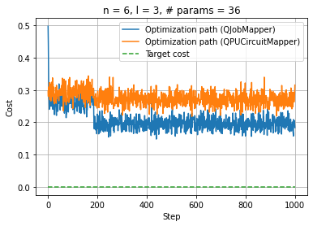

[1]:
import os, sys
import numpy as np
# path to access c++ files
sys.path.append(os.getenv("HOME"))
[2]:
from cunqa import get_QPUs
qpus = get_QPUs(local=False)
for q in qpus:
print(f"QPU {q.id}, backend: {q.backend.name}, simulator: {q.backend.simulator}, version: {q.backend.version}.")
QPU 0, backend: SimpleSimulator, simulator: SimpleMunich, version: 0.0.1.
QPU 1, backend: SimpleSimulator, simulator: SimpleMunich, version: 0.0.1.
QPU 2, backend: SimpleSimulator, simulator: SimpleMunich, version: 0.0.1.
Paralelization for gradient-free optimizers: Differential Evolution
#TODO: Introduction and explanation
We recover the variational circuit used before:
[3]:
from qiskit import QuantumCircuit
from qiskit.circuit import Parameter
def hardware_efficient_ansatz(num_qubits, num_layers):
qc = QuantumCircuit(num_qubits)
param_idx = 0
for _ in range(num_layers):
for qubit in range(num_qubits):
phi = Parameter(f'phi_{param_idx}_{qubit}')
lam = Parameter(f'lam_{param_idx}_{qubit}')
qc.ry(phi, qubit)
qc.rz(lam, qubit)
param_idx += 1
for qubit in range(num_qubits - 1):
qc.cx(qubit, qubit + 1)
qc.measure_all()
return qc
[4]:
def target_distribution(num_qubits):
# Define a normal distribution over the states
num_states = 2 ** num_qubits
states = np.arange(num_states)
mean = num_states / 2
std_dev = num_states / 4
target_probs = norm.pdf(states, mean, std_dev)
target_probs /= target_probs.sum() # Normalize to make it a valid probability distribution
target_dist = {format(i, f'0{num_qubits}b'): target_probs[i] for i in range(num_states)}
return target_dist
import pandas as pd
from scipy.stats import entropy, norm
def KL_divergence(counts, n_shots, target_dist):
# Convert counts to probabilities
pdf = pd.DataFrame.from_dict(counts, orient="index").reset_index()
pdf.rename(columns={"index": "state", 0: "counts"}, inplace=True)
pdf["probability"] = pdf["counts"] / n_shots
# Create a dictionary for the obtained distribution
obtained_dist = pdf.set_index("state")["probability"].to_dict()
# Ensure all states are present in the obtained distribution
for state in target_dist:
if state not in obtained_dist:
obtained_dist[state] = 0.0
# Convert distributions to lists for KL divergence calculation
target_probs = [target_dist[state] for state in sorted(target_dist)]
obtained_probs = [obtained_dist[state] for state in sorted(obtained_dist)]
# Calculate KL divergence
kl_divergence = entropy(obtained_probs, target_probs)
return kl_divergence
[5]:
num_qubits = 6
num_layers = 3
n_shots = 999
target_dist = target_distribution(num_qubits)
[6]:
def cost_function(result):
global target_dist
counts = result.counts
return KL_divergence(counts, n_shots, target_dist)
[7]:
ansatz = hardware_efficient_ansatz(num_qubits, num_layers)
num_parameters = ansatz.num_parameters; print(num_parameters)
initial_parameters = np.zeros(num_parameters)
36
QJobMapper
[8]:
init_qjobs = []
init_params = np.zeros(num_parameters)
for i in range(1*num_parameters):# we set pop=1 as the population size is pop*num_parameters
qpu = qpus[i%len(qpus)]# we select the qpu
init_qjobs.append(qpu.run(ansatz.assign_parameters(init_params), transpile=False, shots=n_shots))
from cunqa import QJobMapper
mapper = QJobMapper(init_qjobs)
[9]:
pop=[]
total_pop=1*num_parameters
for j in range(total_pop):
initial_point=np.random.uniform(-np.pi, np.pi, num_parameters)
pop.append(initial_point)
bounds=[]
for i in range(0,num_parameters):
bounds.append((-np.pi,np.pi))
print("Bounds:", len(bounds))
print("Initial population:", len(pop))
best_individual = []
energies = []
def cb(xk,convergence=1e-8):
best_individual.append(xk)
energy = mapper(cost_function, [xk])[0]
energies.append(energy)
from scipy.optimize import differential_evolution
import time
tick = time.time()
result = differential_evolution(cost_function, bounds, maxiter=1000, disp=True, workers=mapper, updating='deferred',strategy='best1bin', init=pop, polish = False, callback=cb)
tack = time.time()
print(result)
print("Time:", tack-tick)
Bounds: 36
Initial population: 36
differential_evolution step 1: f(x)= 0.4295568558810298
differential_evolution step 2: f(x)= 0.4295568558810298
differential_evolution step 3: f(x)= 0.3326150363348188
differential_evolution step 4: f(x)= 0.2925710401822603
differential_evolution step 5: f(x)= 0.2925710401822603
differential_evolution step 6: f(x)= 0.2925710401822603
differential_evolution step 7: f(x)= 0.2925710401822603
differential_evolution step 8: f(x)= 0.2925710401822603
differential_evolution step 9: f(x)= 0.2925710401822603
differential_evolution step 10: f(x)= 0.2925710401822603
differential_evolution step 11: f(x)= 0.2925710401822603
differential_evolution step 12: f(x)= 0.2925710401822603
differential_evolution step 13: f(x)= 0.2925710401822603
differential_evolution step 14: f(x)= 0.2925710401822603
differential_evolution step 15: f(x)= 0.2925710401822603
differential_evolution step 16: f(x)= 0.2925710401822603
differential_evolution step 17: f(x)= 0.2925710401822603
differential_evolution step 18: f(x)= 0.27957904933544764
differential_evolution step 19: f(x)= 0.27957904933544764
differential_evolution step 20: f(x)= 0.27957904933544764
differential_evolution step 21: f(x)= 0.27957904933544764
differential_evolution step 22: f(x)= 0.27957904933544764
differential_evolution step 23: f(x)= 0.27957904933544764
differential_evolution step 24: f(x)= 0.27957904933544764
differential_evolution step 25: f(x)= 0.27957904933544764
differential_evolution step 26: f(x)= 0.27957904933544764
differential_evolution step 27: f(x)= 0.27957904933544764
differential_evolution step 28: f(x)= 0.27957904933544764
differential_evolution step 29: f(x)= 0.27957904933544764
differential_evolution step 30: f(x)= 0.27957904933544764
differential_evolution step 31: f(x)= 0.27957904933544764
differential_evolution step 32: f(x)= 0.27957904933544764
differential_evolution step 33: f(x)= 0.27957904933544764
differential_evolution step 34: f(x)= 0.27957904933544764
differential_evolution step 35: f(x)= 0.27957904933544764
differential_evolution step 36: f(x)= 0.27957904933544764
differential_evolution step 37: f(x)= 0.27957904933544764
differential_evolution step 38: f(x)= 0.27957904933544764
differential_evolution step 39: f(x)= 0.27957904933544764
differential_evolution step 40: f(x)= 0.27957904933544764
differential_evolution step 41: f(x)= 0.27957904933544764
differential_evolution step 42: f(x)= 0.27957904933544764
differential_evolution step 43: f(x)= 0.27957904933544764
differential_evolution step 44: f(x)= 0.27957904933544764
differential_evolution step 45: f(x)= 0.27957904933544764
differential_evolution step 46: f(x)= 0.27957904933544764
differential_evolution step 47: f(x)= 0.27957904933544764
differential_evolution step 48: f(x)= 0.27957904933544764
differential_evolution step 49: f(x)= 0.27957904933544764
differential_evolution step 50: f(x)= 0.27957904933544764
differential_evolution step 51: f(x)= 0.27957904933544764
differential_evolution step 52: f(x)= 0.27957904933544764
differential_evolution step 53: f(x)= 0.27957904933544764
differential_evolution step 54: f(x)= 0.27957904933544764
differential_evolution step 55: f(x)= 0.27957904933544764
differential_evolution step 56: f(x)= 0.27957904933544764
differential_evolution step 57: f(x)= 0.27957904933544764
differential_evolution step 58: f(x)= 0.27957904933544764
differential_evolution step 59: f(x)= 0.27957904933544764
differential_evolution step 60: f(x)= 0.27957904933544764
differential_evolution step 61: f(x)= 0.27957904933544764
differential_evolution step 62: f(x)= 0.27957904933544764
differential_evolution step 63: f(x)= 0.27957904933544764
differential_evolution step 64: f(x)= 0.27957904933544764
differential_evolution step 65: f(x)= 0.27957904933544764
differential_evolution step 66: f(x)= 0.27957904933544764
differential_evolution step 67: f(x)= 0.27957904933544764
differential_evolution step 68: f(x)= 0.27957904933544764
differential_evolution step 69: f(x)= 0.27957904933544764
differential_evolution step 70: f(x)= 0.27957904933544764
differential_evolution step 71: f(x)= 0.27957904933544764
differential_evolution step 72: f(x)= 0.27957904933544764
differential_evolution step 73: f(x)= 0.27957904933544764
differential_evolution step 74: f(x)= 0.27957904933544764
differential_evolution step 75: f(x)= 0.27957904933544764
differential_evolution step 76: f(x)= 0.27957904933544764
differential_evolution step 77: f(x)= 0.27957904933544764
differential_evolution step 78: f(x)= 0.27957904933544764
differential_evolution step 79: f(x)= 0.27957904933544764
differential_evolution step 80: f(x)= 0.27957904933544764
differential_evolution step 81: f(x)= 0.27957904933544764
differential_evolution step 82: f(x)= 0.27957904933544764
differential_evolution step 83: f(x)= 0.27957904933544764
differential_evolution step 84: f(x)= 0.27957904933544764
differential_evolution step 85: f(x)= 0.27957904933544764
differential_evolution step 86: f(x)= 0.27957904933544764
differential_evolution step 87: f(x)= 0.27957904933544764
differential_evolution step 88: f(x)= 0.27957904933544764
differential_evolution step 89: f(x)= 0.27957904933544764
differential_evolution step 90: f(x)= 0.27957904933544764
differential_evolution step 91: f(x)= 0.27957904933544764
differential_evolution step 92: f(x)= 0.27957904933544764
differential_evolution step 93: f(x)= 0.27957904933544764
differential_evolution step 94: f(x)= 0.27957904933544764
differential_evolution step 95: f(x)= 0.27957904933544764
differential_evolution step 96: f(x)= 0.27957904933544764
differential_evolution step 97: f(x)= 0.27957904933544764
differential_evolution step 98: f(x)= 0.27957904933544764
differential_evolution step 99: f(x)= 0.27957904933544764
differential_evolution step 100: f(x)= 0.27957904933544764
differential_evolution step 101: f(x)= 0.27957904933544764
differential_evolution step 102: f(x)= 0.27957904933544764
differential_evolution step 103: f(x)= 0.27957904933544764
differential_evolution step 104: f(x)= 0.27957904933544764
differential_evolution step 105: f(x)= 0.27957904933544764
differential_evolution step 106: f(x)= 0.27957904933544764
differential_evolution step 107: f(x)= 0.27957904933544764
differential_evolution step 108: f(x)= 0.27957904933544764
differential_evolution step 109: f(x)= 0.27957904933544764
differential_evolution step 110: f(x)= 0.27957904933544764
differential_evolution step 111: f(x)= 0.27957904933544764
differential_evolution step 112: f(x)= 0.27957904933544764
differential_evolution step 113: f(x)= 0.27957904933544764
differential_evolution step 114: f(x)= 0.27957904933544764
differential_evolution step 115: f(x)= 0.27957904933544764
differential_evolution step 116: f(x)= 0.27957904933544764
differential_evolution step 117: f(x)= 0.27957904933544764
differential_evolution step 118: f(x)= 0.27957904933544764
differential_evolution step 119: f(x)= 0.27957904933544764
differential_evolution step 120: f(x)= 0.27957904933544764
differential_evolution step 121: f(x)= 0.27957904933544764
differential_evolution step 122: f(x)= 0.27957904933544764
differential_evolution step 123: f(x)= 0.27957904933544764
differential_evolution step 124: f(x)= 0.27957904933544764
differential_evolution step 125: f(x)= 0.27957904933544764
differential_evolution step 126: f(x)= 0.27957904933544764
differential_evolution step 127: f(x)= 0.27957904933544764
differential_evolution step 128: f(x)= 0.27957904933544764
differential_evolution step 129: f(x)= 0.27957904933544764
differential_evolution step 130: f(x)= 0.27957904933544764
differential_evolution step 131: f(x)= 0.27957904933544764
differential_evolution step 132: f(x)= 0.27957904933544764
differential_evolution step 133: f(x)= 0.27957904933544764
differential_evolution step 134: f(x)= 0.27957904933544764
differential_evolution step 135: f(x)= 0.27957904933544764
differential_evolution step 136: f(x)= 0.27957904933544764
differential_evolution step 137: f(x)= 0.27957904933544764
differential_evolution step 138: f(x)= 0.27957904933544764
differential_evolution step 139: f(x)= 0.27957904933544764
differential_evolution step 140: f(x)= 0.27957904933544764
differential_evolution step 141: f(x)= 0.27957904933544764
differential_evolution step 142: f(x)= 0.27957904933544764
differential_evolution step 143: f(x)= 0.27957904933544764
differential_evolution step 144: f(x)= 0.27957904933544764
differential_evolution step 145: f(x)= 0.27957904933544764
differential_evolution step 146: f(x)= 0.27957904933544764
differential_evolution step 147: f(x)= 0.27957904933544764
differential_evolution step 148: f(x)= 0.27957904933544764
differential_evolution step 149: f(x)= 0.27957904933544764
differential_evolution step 150: f(x)= 0.27957904933544764
differential_evolution step 151: f(x)= 0.27957904933544764
differential_evolution step 152: f(x)= 0.27957904933544764
differential_evolution step 153: f(x)= 0.27957904933544764
differential_evolution step 154: f(x)= 0.27957904933544764
differential_evolution step 155: f(x)= 0.27957904933544764
differential_evolution step 156: f(x)= 0.27957904933544764
differential_evolution step 157: f(x)= 0.27957904933544764
differential_evolution step 158: f(x)= 0.27957904933544764
differential_evolution step 159: f(x)= 0.27957904933544764
differential_evolution step 160: f(x)= 0.27957904933544764
differential_evolution step 161: f(x)= 0.27957904933544764
differential_evolution step 162: f(x)= 0.27957904933544764
differential_evolution step 163: f(x)= 0.27957904933544764
differential_evolution step 164: f(x)= 0.27957904933544764
differential_evolution step 165: f(x)= 0.27957904933544764
differential_evolution step 166: f(x)= 0.27957904933544764
differential_evolution step 167: f(x)= 0.27957904933544764
differential_evolution step 168: f(x)= 0.27957904933544764
differential_evolution step 169: f(x)= 0.27957904933544764
differential_evolution step 170: f(x)= 0.27957904933544764
differential_evolution step 171: f(x)= 0.27957904933544764
differential_evolution step 172: f(x)= 0.27957904933544764
differential_evolution step 173: f(x)= 0.27957904933544764
differential_evolution step 174: f(x)= 0.27957904933544764
differential_evolution step 175: f(x)= 0.27957904933544764
differential_evolution step 176: f(x)= 0.27957904933544764
differential_evolution step 177: f(x)= 0.27957904933544764
differential_evolution step 178: f(x)= 0.27957904933544764
differential_evolution step 179: f(x)= 0.27957904933544764
differential_evolution step 180: f(x)= 0.27957904933544764
differential_evolution step 181: f(x)= 0.27957904933544764
differential_evolution step 182: f(x)= 0.27957904933544764
differential_evolution step 183: f(x)= 0.27957904933544764
differential_evolution step 184: f(x)= 0.27957904933544764
differential_evolution step 185: f(x)= 0.27957904933544764
differential_evolution step 186: f(x)= 0.1940782830560342
differential_evolution step 187: f(x)= 0.1940782830560342
differential_evolution step 188: f(x)= 0.1940782830560342
differential_evolution step 189: f(x)= 0.1940782830560342
differential_evolution step 190: f(x)= 0.1940782830560342
differential_evolution step 191: f(x)= 0.1940782830560342
differential_evolution step 192: f(x)= 0.1940782830560342
differential_evolution step 193: f(x)= 0.1940782830560342
differential_evolution step 194: f(x)= 0.1940782830560342
differential_evolution step 195: f(x)= 0.1940782830560342
differential_evolution step 196: f(x)= 0.1940782830560342
differential_evolution step 197: f(x)= 0.1940782830560342
differential_evolution step 198: f(x)= 0.1940782830560342
differential_evolution step 199: f(x)= 0.1940782830560342
differential_evolution step 200: f(x)= 0.1940782830560342
differential_evolution step 201: f(x)= 0.1940782830560342
differential_evolution step 202: f(x)= 0.1940782830560342
differential_evolution step 203: f(x)= 0.1940782830560342
differential_evolution step 204: f(x)= 0.1940782830560342
differential_evolution step 205: f(x)= 0.1940782830560342
differential_evolution step 206: f(x)= 0.1940782830560342
differential_evolution step 207: f(x)= 0.1940782830560342
differential_evolution step 208: f(x)= 0.1940782830560342
differential_evolution step 209: f(x)= 0.1940782830560342
differential_evolution step 210: f(x)= 0.1940782830560342
differential_evolution step 211: f(x)= 0.1940782830560342
differential_evolution step 212: f(x)= 0.1940782830560342
differential_evolution step 213: f(x)= 0.1940782830560342
differential_evolution step 214: f(x)= 0.1940782830560342
differential_evolution step 215: f(x)= 0.1940782830560342
differential_evolution step 216: f(x)= 0.1940782830560342
differential_evolution step 217: f(x)= 0.1940782830560342
differential_evolution step 218: f(x)= 0.1940782830560342
differential_evolution step 219: f(x)= 0.1940782830560342
differential_evolution step 220: f(x)= 0.1940782830560342
differential_evolution step 221: f(x)= 0.1940782830560342
differential_evolution step 222: f(x)= 0.1940782830560342
differential_evolution step 223: f(x)= 0.1940782830560342
differential_evolution step 224: f(x)= 0.1940782830560342
differential_evolution step 225: f(x)= 0.1940782830560342
differential_evolution step 226: f(x)= 0.1940782830560342
differential_evolution step 227: f(x)= 0.1940782830560342
differential_evolution step 228: f(x)= 0.1940782830560342
differential_evolution step 229: f(x)= 0.1940782830560342
differential_evolution step 230: f(x)= 0.1940782830560342
differential_evolution step 231: f(x)= 0.1940782830560342
differential_evolution step 232: f(x)= 0.1940782830560342
differential_evolution step 233: f(x)= 0.1940782830560342
differential_evolution step 234: f(x)= 0.1940782830560342
differential_evolution step 235: f(x)= 0.1940782830560342
differential_evolution step 236: f(x)= 0.1940782830560342
differential_evolution step 237: f(x)= 0.1940782830560342
differential_evolution step 238: f(x)= 0.1940782830560342
differential_evolution step 239: f(x)= 0.1940782830560342
differential_evolution step 240: f(x)= 0.1940782830560342
differential_evolution step 241: f(x)= 0.1940782830560342
differential_evolution step 242: f(x)= 0.1940782830560342
differential_evolution step 243: f(x)= 0.1940782830560342
differential_evolution step 244: f(x)= 0.1940782830560342
differential_evolution step 245: f(x)= 0.1940782830560342
differential_evolution step 246: f(x)= 0.1940782830560342
differential_evolution step 247: f(x)= 0.1940782830560342
differential_evolution step 248: f(x)= 0.1940782830560342
differential_evolution step 249: f(x)= 0.1940782830560342
differential_evolution step 250: f(x)= 0.1940782830560342
differential_evolution step 251: f(x)= 0.1940782830560342
differential_evolution step 252: f(x)= 0.1940782830560342
differential_evolution step 253: f(x)= 0.1940782830560342
differential_evolution step 254: f(x)= 0.1940782830560342
differential_evolution step 255: f(x)= 0.1940782830560342
differential_evolution step 256: f(x)= 0.1940782830560342
differential_evolution step 257: f(x)= 0.1940782830560342
differential_evolution step 258: f(x)= 0.1940782830560342
differential_evolution step 259: f(x)= 0.1940782830560342
differential_evolution step 260: f(x)= 0.1940782830560342
differential_evolution step 261: f(x)= 0.1940782830560342
differential_evolution step 262: f(x)= 0.1940782830560342
differential_evolution step 263: f(x)= 0.1940782830560342
differential_evolution step 264: f(x)= 0.1940782830560342
differential_evolution step 265: f(x)= 0.1940782830560342
differential_evolution step 266: f(x)= 0.1940782830560342
differential_evolution step 267: f(x)= 0.1940782830560342
differential_evolution step 268: f(x)= 0.1940782830560342
differential_evolution step 269: f(x)= 0.1940782830560342
differential_evolution step 270: f(x)= 0.1940782830560342
differential_evolution step 271: f(x)= 0.1940782830560342
differential_evolution step 272: f(x)= 0.1940782830560342
differential_evolution step 273: f(x)= 0.1940782830560342
differential_evolution step 274: f(x)= 0.1940782830560342
differential_evolution step 275: f(x)= 0.1940782830560342
differential_evolution step 276: f(x)= 0.1940782830560342
differential_evolution step 277: f(x)= 0.1940782830560342
differential_evolution step 278: f(x)= 0.1940782830560342
differential_evolution step 279: f(x)= 0.1940782830560342
differential_evolution step 280: f(x)= 0.1940782830560342
differential_evolution step 281: f(x)= 0.1940782830560342
differential_evolution step 282: f(x)= 0.1940782830560342
differential_evolution step 283: f(x)= 0.1940782830560342
differential_evolution step 284: f(x)= 0.1940782830560342
differential_evolution step 285: f(x)= 0.1940782830560342
differential_evolution step 286: f(x)= 0.1940782830560342
differential_evolution step 287: f(x)= 0.1940782830560342
differential_evolution step 288: f(x)= 0.1940782830560342
differential_evolution step 289: f(x)= 0.1940782830560342
differential_evolution step 290: f(x)= 0.1940782830560342
differential_evolution step 291: f(x)= 0.1940782830560342
differential_evolution step 292: f(x)= 0.1940782830560342
differential_evolution step 293: f(x)= 0.1940782830560342
differential_evolution step 294: f(x)= 0.1940782830560342
differential_evolution step 295: f(x)= 0.1940782830560342
differential_evolution step 296: f(x)= 0.1940782830560342
differential_evolution step 297: f(x)= 0.1940782830560342
differential_evolution step 298: f(x)= 0.1940782830560342
differential_evolution step 299: f(x)= 0.1940782830560342
differential_evolution step 300: f(x)= 0.1940782830560342
differential_evolution step 301: f(x)= 0.1940782830560342
differential_evolution step 302: f(x)= 0.1940782830560342
differential_evolution step 303: f(x)= 0.1940782830560342
differential_evolution step 304: f(x)= 0.1940782830560342
differential_evolution step 305: f(x)= 0.1940782830560342
differential_evolution step 306: f(x)= 0.1940782830560342
differential_evolution step 307: f(x)= 0.1940782830560342
differential_evolution step 308: f(x)= 0.1940782830560342
differential_evolution step 309: f(x)= 0.1940782830560342
differential_evolution step 310: f(x)= 0.1940782830560342
differential_evolution step 311: f(x)= 0.1940782830560342
differential_evolution step 312: f(x)= 0.1940782830560342
differential_evolution step 313: f(x)= 0.1940782830560342
differential_evolution step 314: f(x)= 0.1940782830560342
differential_evolution step 315: f(x)= 0.1940782830560342
differential_evolution step 316: f(x)= 0.1940782830560342
differential_evolution step 317: f(x)= 0.1940782830560342
differential_evolution step 318: f(x)= 0.1940782830560342
differential_evolution step 319: f(x)= 0.1940782830560342
differential_evolution step 320: f(x)= 0.1940782830560342
differential_evolution step 321: f(x)= 0.1940782830560342
differential_evolution step 322: f(x)= 0.1940782830560342
differential_evolution step 323: f(x)= 0.1940782830560342
differential_evolution step 324: f(x)= 0.1940782830560342
differential_evolution step 325: f(x)= 0.1940782830560342
differential_evolution step 326: f(x)= 0.1940782830560342
differential_evolution step 327: f(x)= 0.1940782830560342
differential_evolution step 328: f(x)= 0.1940782830560342
differential_evolution step 329: f(x)= 0.1940782830560342
differential_evolution step 330: f(x)= 0.1940782830560342
differential_evolution step 331: f(x)= 0.1940782830560342
differential_evolution step 332: f(x)= 0.1940782830560342
differential_evolution step 333: f(x)= 0.1940782830560342
differential_evolution step 334: f(x)= 0.1940782830560342
differential_evolution step 335: f(x)= 0.1940782830560342
differential_evolution step 336: f(x)= 0.1940782830560342
differential_evolution step 337: f(x)= 0.1940782830560342
differential_evolution step 338: f(x)= 0.1940782830560342
differential_evolution step 339: f(x)= 0.1940782830560342
differential_evolution step 340: f(x)= 0.1940782830560342
differential_evolution step 341: f(x)= 0.1940782830560342
differential_evolution step 342: f(x)= 0.1940782830560342
differential_evolution step 343: f(x)= 0.1940782830560342
differential_evolution step 344: f(x)= 0.1940782830560342
differential_evolution step 345: f(x)= 0.1940782830560342
differential_evolution step 346: f(x)= 0.1940782830560342
differential_evolution step 347: f(x)= 0.1940782830560342
differential_evolution step 348: f(x)= 0.1940782830560342
differential_evolution step 349: f(x)= 0.1940782830560342
differential_evolution step 350: f(x)= 0.1940782830560342
differential_evolution step 351: f(x)= 0.1940782830560342
differential_evolution step 352: f(x)= 0.1940782830560342
differential_evolution step 353: f(x)= 0.1940782830560342
differential_evolution step 354: f(x)= 0.1940782830560342
differential_evolution step 355: f(x)= 0.1940782830560342
differential_evolution step 356: f(x)= 0.1940782830560342
differential_evolution step 357: f(x)= 0.1940782830560342
differential_evolution step 358: f(x)= 0.1940782830560342
differential_evolution step 359: f(x)= 0.1940782830560342
differential_evolution step 360: f(x)= 0.1940782830560342
differential_evolution step 361: f(x)= 0.1940782830560342
differential_evolution step 362: f(x)= 0.1940782830560342
differential_evolution step 363: f(x)= 0.1940782830560342
differential_evolution step 364: f(x)= 0.1940782830560342
differential_evolution step 365: f(x)= 0.1940782830560342
differential_evolution step 366: f(x)= 0.1940782830560342
differential_evolution step 367: f(x)= 0.1940782830560342
differential_evolution step 368: f(x)= 0.1940782830560342
differential_evolution step 369: f(x)= 0.1940782830560342
differential_evolution step 370: f(x)= 0.1940782830560342
differential_evolution step 371: f(x)= 0.1940782830560342
differential_evolution step 372: f(x)= 0.1940782830560342
differential_evolution step 373: f(x)= 0.1940782830560342
differential_evolution step 374: f(x)= 0.1940782830560342
differential_evolution step 375: f(x)= 0.1940782830560342
differential_evolution step 376: f(x)= 0.1940782830560342
differential_evolution step 377: f(x)= 0.1940782830560342
differential_evolution step 378: f(x)= 0.1940782830560342
differential_evolution step 379: f(x)= 0.1940782830560342
differential_evolution step 380: f(x)= 0.1940782830560342
differential_evolution step 381: f(x)= 0.1940782830560342
differential_evolution step 382: f(x)= 0.1940782830560342
differential_evolution step 383: f(x)= 0.1940782830560342
differential_evolution step 384: f(x)= 0.1940782830560342
differential_evolution step 385: f(x)= 0.1940782830560342
differential_evolution step 386: f(x)= 0.1940782830560342
differential_evolution step 387: f(x)= 0.1940782830560342
differential_evolution step 388: f(x)= 0.1940782830560342
differential_evolution step 389: f(x)= 0.1940782830560342
differential_evolution step 390: f(x)= 0.1940782830560342
differential_evolution step 391: f(x)= 0.1940782830560342
differential_evolution step 392: f(x)= 0.1940782830560342
differential_evolution step 393: f(x)= 0.1940782830560342
differential_evolution step 394: f(x)= 0.1940782830560342
differential_evolution step 395: f(x)= 0.1940782830560342
differential_evolution step 396: f(x)= 0.1940782830560342
differential_evolution step 397: f(x)= 0.1940782830560342
differential_evolution step 398: f(x)= 0.1940782830560342
differential_evolution step 399: f(x)= 0.1940782830560342
differential_evolution step 400: f(x)= 0.1940782830560342
differential_evolution step 401: f(x)= 0.1940782830560342
differential_evolution step 402: f(x)= 0.1940782830560342
differential_evolution step 403: f(x)= 0.1940782830560342
differential_evolution step 404: f(x)= 0.1940782830560342
differential_evolution step 405: f(x)= 0.1940782830560342
differential_evolution step 406: f(x)= 0.1940782830560342
differential_evolution step 407: f(x)= 0.1940782830560342
differential_evolution step 408: f(x)= 0.1940782830560342
differential_evolution step 409: f(x)= 0.1940782830560342
differential_evolution step 410: f(x)= 0.1940782830560342
differential_evolution step 411: f(x)= 0.1940782830560342
differential_evolution step 412: f(x)= 0.1940782830560342
differential_evolution step 413: f(x)= 0.1940782830560342
differential_evolution step 414: f(x)= 0.1940782830560342
differential_evolution step 415: f(x)= 0.1940782830560342
differential_evolution step 416: f(x)= 0.1940782830560342
differential_evolution step 417: f(x)= 0.1940782830560342
differential_evolution step 418: f(x)= 0.1940782830560342
differential_evolution step 419: f(x)= 0.1940782830560342
differential_evolution step 420: f(x)= 0.1940782830560342
differential_evolution step 421: f(x)= 0.1940782830560342
differential_evolution step 422: f(x)= 0.1940782830560342
differential_evolution step 423: f(x)= 0.1940782830560342
differential_evolution step 424: f(x)= 0.1940782830560342
differential_evolution step 425: f(x)= 0.1940782830560342
differential_evolution step 426: f(x)= 0.1940782830560342
differential_evolution step 427: f(x)= 0.1940782830560342
differential_evolution step 428: f(x)= 0.1940782830560342
differential_evolution step 429: f(x)= 0.1940782830560342
differential_evolution step 430: f(x)= 0.1940782830560342
differential_evolution step 431: f(x)= 0.1940782830560342
differential_evolution step 432: f(x)= 0.1940782830560342
differential_evolution step 433: f(x)= 0.1940782830560342
differential_evolution step 434: f(x)= 0.1940782830560342
differential_evolution step 435: f(x)= 0.1940782830560342
differential_evolution step 436: f(x)= 0.1940782830560342
differential_evolution step 437: f(x)= 0.1940782830560342
differential_evolution step 438: f(x)= 0.1940782830560342
differential_evolution step 439: f(x)= 0.1940782830560342
differential_evolution step 440: f(x)= 0.1940782830560342
differential_evolution step 441: f(x)= 0.1940782830560342
differential_evolution step 442: f(x)= 0.1940782830560342
differential_evolution step 443: f(x)= 0.1940782830560342
differential_evolution step 444: f(x)= 0.1940782830560342
differential_evolution step 445: f(x)= 0.1940782830560342
differential_evolution step 446: f(x)= 0.1940782830560342
differential_evolution step 447: f(x)= 0.1940782830560342
differential_evolution step 448: f(x)= 0.1940782830560342
differential_evolution step 449: f(x)= 0.1940782830560342
differential_evolution step 450: f(x)= 0.1940782830560342
differential_evolution step 451: f(x)= 0.1940782830560342
differential_evolution step 452: f(x)= 0.1940782830560342
differential_evolution step 453: f(x)= 0.1940782830560342
differential_evolution step 454: f(x)= 0.1940782830560342
differential_evolution step 455: f(x)= 0.1940782830560342
differential_evolution step 456: f(x)= 0.1940782830560342
differential_evolution step 457: f(x)= 0.1940782830560342
differential_evolution step 458: f(x)= 0.1940782830560342
differential_evolution step 459: f(x)= 0.1940782830560342
differential_evolution step 460: f(x)= 0.1940782830560342
differential_evolution step 461: f(x)= 0.1940782830560342
differential_evolution step 462: f(x)= 0.1940782830560342
differential_evolution step 463: f(x)= 0.1940782830560342
differential_evolution step 464: f(x)= 0.1940782830560342
differential_evolution step 465: f(x)= 0.1940782830560342
differential_evolution step 466: f(x)= 0.1940782830560342
differential_evolution step 467: f(x)= 0.1940782830560342
differential_evolution step 468: f(x)= 0.1940782830560342
differential_evolution step 469: f(x)= 0.1940782830560342
differential_evolution step 470: f(x)= 0.1940782830560342
differential_evolution step 471: f(x)= 0.1940782830560342
differential_evolution step 472: f(x)= 0.1940782830560342
differential_evolution step 473: f(x)= 0.1940782830560342
differential_evolution step 474: f(x)= 0.1940782830560342
differential_evolution step 475: f(x)= 0.1940782830560342
differential_evolution step 476: f(x)= 0.1940782830560342
differential_evolution step 477: f(x)= 0.1940782830560342
differential_evolution step 478: f(x)= 0.1940782830560342
differential_evolution step 479: f(x)= 0.1940782830560342
differential_evolution step 480: f(x)= 0.1940782830560342
differential_evolution step 481: f(x)= 0.1940782830560342
differential_evolution step 482: f(x)= 0.1940782830560342
differential_evolution step 483: f(x)= 0.1940782830560342
differential_evolution step 484: f(x)= 0.1940782830560342
differential_evolution step 485: f(x)= 0.1940782830560342
differential_evolution step 486: f(x)= 0.1940782830560342
differential_evolution step 487: f(x)= 0.1940782830560342
differential_evolution step 488: f(x)= 0.1940782830560342
differential_evolution step 489: f(x)= 0.1940782830560342
differential_evolution step 490: f(x)= 0.1940782830560342
differential_evolution step 491: f(x)= 0.1940782830560342
differential_evolution step 492: f(x)= 0.1940782830560342
differential_evolution step 493: f(x)= 0.1940782830560342
differential_evolution step 494: f(x)= 0.1940782830560342
differential_evolution step 495: f(x)= 0.1940782830560342
differential_evolution step 496: f(x)= 0.1940782830560342
differential_evolution step 497: f(x)= 0.1940782830560342
differential_evolution step 498: f(x)= 0.1940782830560342
differential_evolution step 499: f(x)= 0.1940782830560342
differential_evolution step 500: f(x)= 0.1940782830560342
differential_evolution step 501: f(x)= 0.1940782830560342
differential_evolution step 502: f(x)= 0.1940782830560342
differential_evolution step 503: f(x)= 0.1940782830560342
differential_evolution step 504: f(x)= 0.1940782830560342
differential_evolution step 505: f(x)= 0.1940782830560342
differential_evolution step 506: f(x)= 0.1940782830560342
differential_evolution step 507: f(x)= 0.1940782830560342
differential_evolution step 508: f(x)= 0.1940782830560342
differential_evolution step 509: f(x)= 0.1940782830560342
differential_evolution step 510: f(x)= 0.1940782830560342
differential_evolution step 511: f(x)= 0.1940782830560342
differential_evolution step 512: f(x)= 0.1940782830560342
differential_evolution step 513: f(x)= 0.1940782830560342
differential_evolution step 514: f(x)= 0.1940782830560342
differential_evolution step 515: f(x)= 0.1940782830560342
differential_evolution step 516: f(x)= 0.1940782830560342
differential_evolution step 517: f(x)= 0.1940782830560342
differential_evolution step 518: f(x)= 0.1940782830560342
differential_evolution step 519: f(x)= 0.1940782830560342
differential_evolution step 520: f(x)= 0.1940782830560342
differential_evolution step 521: f(x)= 0.1940782830560342
differential_evolution step 522: f(x)= 0.1940782830560342
differential_evolution step 523: f(x)= 0.1940782830560342
differential_evolution step 524: f(x)= 0.1940782830560342
differential_evolution step 525: f(x)= 0.1940782830560342
differential_evolution step 526: f(x)= 0.1940782830560342
differential_evolution step 527: f(x)= 0.1940782830560342
differential_evolution step 528: f(x)= 0.1940782830560342
differential_evolution step 529: f(x)= 0.1940782830560342
differential_evolution step 530: f(x)= 0.1940782830560342
differential_evolution step 531: f(x)= 0.1940782830560342
differential_evolution step 532: f(x)= 0.1940782830560342
differential_evolution step 533: f(x)= 0.1940782830560342
differential_evolution step 534: f(x)= 0.1940782830560342
differential_evolution step 535: f(x)= 0.1940782830560342
differential_evolution step 536: f(x)= 0.1940782830560342
differential_evolution step 537: f(x)= 0.1940782830560342
differential_evolution step 538: f(x)= 0.1940782830560342
differential_evolution step 539: f(x)= 0.1940782830560342
differential_evolution step 540: f(x)= 0.1940782830560342
differential_evolution step 541: f(x)= 0.1940782830560342
differential_evolution step 542: f(x)= 0.1940782830560342
differential_evolution step 543: f(x)= 0.1940782830560342
differential_evolution step 544: f(x)= 0.1940782830560342
differential_evolution step 545: f(x)= 0.1940782830560342
differential_evolution step 546: f(x)= 0.1940782830560342
differential_evolution step 547: f(x)= 0.1940782830560342
differential_evolution step 548: f(x)= 0.1940782830560342
differential_evolution step 549: f(x)= 0.1940782830560342
differential_evolution step 550: f(x)= 0.1940782830560342
differential_evolution step 551: f(x)= 0.1940782830560342
differential_evolution step 552: f(x)= 0.1940782830560342
differential_evolution step 553: f(x)= 0.1940782830560342
differential_evolution step 554: f(x)= 0.1940782830560342
differential_evolution step 555: f(x)= 0.1940782830560342
differential_evolution step 556: f(x)= 0.1940782830560342
differential_evolution step 557: f(x)= 0.1940782830560342
differential_evolution step 558: f(x)= 0.1940782830560342
differential_evolution step 559: f(x)= 0.1940782830560342
differential_evolution step 560: f(x)= 0.1940782830560342
differential_evolution step 561: f(x)= 0.1940782830560342
differential_evolution step 562: f(x)= 0.1940782830560342
differential_evolution step 563: f(x)= 0.1940782830560342
differential_evolution step 564: f(x)= 0.1940782830560342
differential_evolution step 565: f(x)= 0.1940782830560342
differential_evolution step 566: f(x)= 0.1940782830560342
differential_evolution step 567: f(x)= 0.1940782830560342
differential_evolution step 568: f(x)= 0.1940782830560342
differential_evolution step 569: f(x)= 0.1940782830560342
differential_evolution step 570: f(x)= 0.1940782830560342
differential_evolution step 571: f(x)= 0.1940782830560342
differential_evolution step 572: f(x)= 0.1940782830560342
differential_evolution step 573: f(x)= 0.1940782830560342
differential_evolution step 574: f(x)= 0.1940782830560342
differential_evolution step 575: f(x)= 0.1940782830560342
differential_evolution step 576: f(x)= 0.1940782830560342
differential_evolution step 577: f(x)= 0.1940782830560342
differential_evolution step 578: f(x)= 0.1940782830560342
differential_evolution step 579: f(x)= 0.1940782830560342
differential_evolution step 580: f(x)= 0.1940782830560342
differential_evolution step 581: f(x)= 0.1940782830560342
differential_evolution step 582: f(x)= 0.1940782830560342
differential_evolution step 583: f(x)= 0.1940782830560342
differential_evolution step 584: f(x)= 0.1940782830560342
differential_evolution step 585: f(x)= 0.1940782830560342
differential_evolution step 586: f(x)= 0.1940782830560342
differential_evolution step 587: f(x)= 0.1940782830560342
differential_evolution step 588: f(x)= 0.1940782830560342
differential_evolution step 589: f(x)= 0.1940782830560342
differential_evolution step 590: f(x)= 0.1940782830560342
differential_evolution step 591: f(x)= 0.1940782830560342
differential_evolution step 592: f(x)= 0.1940782830560342
differential_evolution step 593: f(x)= 0.1940782830560342
differential_evolution step 594: f(x)= 0.1940782830560342
differential_evolution step 595: f(x)= 0.1940782830560342
differential_evolution step 596: f(x)= 0.1940782830560342
differential_evolution step 597: f(x)= 0.1940782830560342
differential_evolution step 598: f(x)= 0.1940782830560342
differential_evolution step 599: f(x)= 0.1940782830560342
differential_evolution step 600: f(x)= 0.1940782830560342
differential_evolution step 601: f(x)= 0.1940782830560342
differential_evolution step 602: f(x)= 0.1940782830560342
differential_evolution step 603: f(x)= 0.1940782830560342
differential_evolution step 604: f(x)= 0.1940782830560342
differential_evolution step 605: f(x)= 0.1940782830560342
differential_evolution step 606: f(x)= 0.1940782830560342
differential_evolution step 607: f(x)= 0.1940782830560342
differential_evolution step 608: f(x)= 0.1940782830560342
differential_evolution step 609: f(x)= 0.1940782830560342
differential_evolution step 610: f(x)= 0.1940782830560342
differential_evolution step 611: f(x)= 0.1940782830560342
differential_evolution step 612: f(x)= 0.1940782830560342
differential_evolution step 613: f(x)= 0.1940782830560342
differential_evolution step 614: f(x)= 0.1940782830560342
differential_evolution step 615: f(x)= 0.1940782830560342
differential_evolution step 616: f(x)= 0.1940782830560342
differential_evolution step 617: f(x)= 0.1940782830560342
differential_evolution step 618: f(x)= 0.1940782830560342
differential_evolution step 619: f(x)= 0.1940782830560342
differential_evolution step 620: f(x)= 0.1940782830560342
differential_evolution step 621: f(x)= 0.1940782830560342
differential_evolution step 622: f(x)= 0.1940782830560342
differential_evolution step 623: f(x)= 0.1940782830560342
differential_evolution step 624: f(x)= 0.1940782830560342
differential_evolution step 625: f(x)= 0.1940782830560342
differential_evolution step 626: f(x)= 0.1940782830560342
differential_evolution step 627: f(x)= 0.1940782830560342
differential_evolution step 628: f(x)= 0.1940782830560342
differential_evolution step 629: f(x)= 0.1940782830560342
differential_evolution step 630: f(x)= 0.1940782830560342
differential_evolution step 631: f(x)= 0.1940782830560342
differential_evolution step 632: f(x)= 0.1940782830560342
differential_evolution step 633: f(x)= 0.1940782830560342
differential_evolution step 634: f(x)= 0.1940782830560342
differential_evolution step 635: f(x)= 0.1940782830560342
differential_evolution step 636: f(x)= 0.1940782830560342
differential_evolution step 637: f(x)= 0.1940782830560342
differential_evolution step 638: f(x)= 0.1940782830560342
differential_evolution step 639: f(x)= 0.1940782830560342
differential_evolution step 640: f(x)= 0.1940782830560342
differential_evolution step 641: f(x)= 0.1940782830560342
differential_evolution step 642: f(x)= 0.1940782830560342
differential_evolution step 643: f(x)= 0.1940782830560342
differential_evolution step 644: f(x)= 0.1940782830560342
differential_evolution step 645: f(x)= 0.1940782830560342
differential_evolution step 646: f(x)= 0.1940782830560342
differential_evolution step 647: f(x)= 0.1940782830560342
differential_evolution step 648: f(x)= 0.1940782830560342
differential_evolution step 649: f(x)= 0.1940782830560342
differential_evolution step 650: f(x)= 0.1940782830560342
differential_evolution step 651: f(x)= 0.1940782830560342
differential_evolution step 652: f(x)= 0.1940782830560342
differential_evolution step 653: f(x)= 0.1940782830560342
differential_evolution step 654: f(x)= 0.1940782830560342
differential_evolution step 655: f(x)= 0.1940782830560342
differential_evolution step 656: f(x)= 0.1940782830560342
differential_evolution step 657: f(x)= 0.1940782830560342
differential_evolution step 658: f(x)= 0.1940782830560342
differential_evolution step 659: f(x)= 0.1940782830560342
differential_evolution step 660: f(x)= 0.1940782830560342
differential_evolution step 661: f(x)= 0.1940782830560342
differential_evolution step 662: f(x)= 0.1940782830560342
differential_evolution step 663: f(x)= 0.1940782830560342
differential_evolution step 664: f(x)= 0.1940782830560342
differential_evolution step 665: f(x)= 0.1940782830560342
differential_evolution step 666: f(x)= 0.1940782830560342
differential_evolution step 667: f(x)= 0.1940782830560342
differential_evolution step 668: f(x)= 0.1940782830560342
differential_evolution step 669: f(x)= 0.1940782830560342
differential_evolution step 670: f(x)= 0.1940782830560342
differential_evolution step 671: f(x)= 0.1940782830560342
differential_evolution step 672: f(x)= 0.1940782830560342
differential_evolution step 673: f(x)= 0.1940782830560342
differential_evolution step 674: f(x)= 0.1940782830560342
differential_evolution step 675: f(x)= 0.1940782830560342
differential_evolution step 676: f(x)= 0.1940782830560342
differential_evolution step 677: f(x)= 0.1940782830560342
differential_evolution step 678: f(x)= 0.1940782830560342
differential_evolution step 679: f(x)= 0.1940782830560342
differential_evolution step 680: f(x)= 0.1940782830560342
differential_evolution step 681: f(x)= 0.1940782830560342
differential_evolution step 682: f(x)= 0.1940782830560342
differential_evolution step 683: f(x)= 0.1940782830560342
differential_evolution step 684: f(x)= 0.1940782830560342
differential_evolution step 685: f(x)= 0.1940782830560342
differential_evolution step 686: f(x)= 0.1940782830560342
differential_evolution step 687: f(x)= 0.1940782830560342
differential_evolution step 688: f(x)= 0.1940782830560342
differential_evolution step 689: f(x)= 0.1940782830560342
differential_evolution step 690: f(x)= 0.1940782830560342
differential_evolution step 691: f(x)= 0.1940782830560342
differential_evolution step 692: f(x)= 0.1940782830560342
differential_evolution step 693: f(x)= 0.1940782830560342
differential_evolution step 694: f(x)= 0.1940782830560342
differential_evolution step 695: f(x)= 0.1940782830560342
differential_evolution step 696: f(x)= 0.1940782830560342
differential_evolution step 697: f(x)= 0.1940782830560342
differential_evolution step 698: f(x)= 0.1940782830560342
differential_evolution step 699: f(x)= 0.1940782830560342
differential_evolution step 700: f(x)= 0.1940782830560342
differential_evolution step 701: f(x)= 0.1940782830560342
differential_evolution step 702: f(x)= 0.1940782830560342
differential_evolution step 703: f(x)= 0.1940782830560342
differential_evolution step 704: f(x)= 0.1940782830560342
differential_evolution step 705: f(x)= 0.1940782830560342
differential_evolution step 706: f(x)= 0.1940782830560342
differential_evolution step 707: f(x)= 0.1940782830560342
differential_evolution step 708: f(x)= 0.1940782830560342
differential_evolution step 709: f(x)= 0.1940782830560342
differential_evolution step 710: f(x)= 0.1940782830560342
differential_evolution step 711: f(x)= 0.1940782830560342
differential_evolution step 712: f(x)= 0.1940782830560342
differential_evolution step 713: f(x)= 0.1940782830560342
differential_evolution step 714: f(x)= 0.1940782830560342
differential_evolution step 715: f(x)= 0.1940782830560342
differential_evolution step 716: f(x)= 0.1940782830560342
differential_evolution step 717: f(x)= 0.1940782830560342
differential_evolution step 718: f(x)= 0.1940782830560342
differential_evolution step 719: f(x)= 0.1940782830560342
differential_evolution step 720: f(x)= 0.1940782830560342
differential_evolution step 721: f(x)= 0.1940782830560342
differential_evolution step 722: f(x)= 0.1940782830560342
differential_evolution step 723: f(x)= 0.1940782830560342
differential_evolution step 724: f(x)= 0.1940782830560342
differential_evolution step 725: f(x)= 0.1940782830560342
differential_evolution step 726: f(x)= 0.1940782830560342
differential_evolution step 727: f(x)= 0.1940782830560342
differential_evolution step 728: f(x)= 0.1940782830560342
differential_evolution step 729: f(x)= 0.1940782830560342
differential_evolution step 730: f(x)= 0.1940782830560342
differential_evolution step 731: f(x)= 0.1940782830560342
differential_evolution step 732: f(x)= 0.1940782830560342
differential_evolution step 733: f(x)= 0.1940782830560342
differential_evolution step 734: f(x)= 0.1940782830560342
differential_evolution step 735: f(x)= 0.1940782830560342
differential_evolution step 736: f(x)= 0.1940782830560342
differential_evolution step 737: f(x)= 0.1940782830560342
differential_evolution step 738: f(x)= 0.1940782830560342
differential_evolution step 739: f(x)= 0.1940782830560342
differential_evolution step 740: f(x)= 0.1940782830560342
differential_evolution step 741: f(x)= 0.1940782830560342
differential_evolution step 742: f(x)= 0.1940782830560342
differential_evolution step 743: f(x)= 0.1940782830560342
differential_evolution step 744: f(x)= 0.1940782830560342
differential_evolution step 745: f(x)= 0.1940782830560342
differential_evolution step 746: f(x)= 0.1940782830560342
differential_evolution step 747: f(x)= 0.1940782830560342
differential_evolution step 748: f(x)= 0.1940782830560342
differential_evolution step 749: f(x)= 0.1940782830560342
differential_evolution step 750: f(x)= 0.1940782830560342
differential_evolution step 751: f(x)= 0.1940782830560342
differential_evolution step 752: f(x)= 0.1940782830560342
differential_evolution step 753: f(x)= 0.1940782830560342
differential_evolution step 754: f(x)= 0.1940782830560342
differential_evolution step 755: f(x)= 0.1940782830560342
differential_evolution step 756: f(x)= 0.1940782830560342
differential_evolution step 757: f(x)= 0.1940782830560342
differential_evolution step 758: f(x)= 0.1940782830560342
differential_evolution step 759: f(x)= 0.1940782830560342
differential_evolution step 760: f(x)= 0.1940782830560342
differential_evolution step 761: f(x)= 0.1940782830560342
differential_evolution step 762: f(x)= 0.1940782830560342
differential_evolution step 763: f(x)= 0.1940782830560342
differential_evolution step 764: f(x)= 0.1940782830560342
differential_evolution step 765: f(x)= 0.1940782830560342
differential_evolution step 766: f(x)= 0.1940782830560342
differential_evolution step 767: f(x)= 0.1940782830560342
differential_evolution step 768: f(x)= 0.1940782830560342
differential_evolution step 769: f(x)= 0.1940782830560342
differential_evolution step 770: f(x)= 0.1940782830560342
differential_evolution step 771: f(x)= 0.1940782830560342
differential_evolution step 772: f(x)= 0.1940782830560342
differential_evolution step 773: f(x)= 0.1940782830560342
differential_evolution step 774: f(x)= 0.1940782830560342
differential_evolution step 775: f(x)= 0.1940782830560342
differential_evolution step 776: f(x)= 0.1940782830560342
differential_evolution step 777: f(x)= 0.1940782830560342
differential_evolution step 778: f(x)= 0.1940782830560342
differential_evolution step 779: f(x)= 0.1940782830560342
differential_evolution step 780: f(x)= 0.1940782830560342
differential_evolution step 781: f(x)= 0.1940782830560342
differential_evolution step 782: f(x)= 0.1940782830560342
differential_evolution step 783: f(x)= 0.1940782830560342
differential_evolution step 784: f(x)= 0.1940782830560342
differential_evolution step 785: f(x)= 0.1940782830560342
differential_evolution step 786: f(x)= 0.1940782830560342
differential_evolution step 787: f(x)= 0.1940782830560342
differential_evolution step 788: f(x)= 0.1940782830560342
differential_evolution step 789: f(x)= 0.1940782830560342
differential_evolution step 790: f(x)= 0.1940782830560342
differential_evolution step 791: f(x)= 0.1940782830560342
differential_evolution step 792: f(x)= 0.1940782830560342
differential_evolution step 793: f(x)= 0.1940782830560342
differential_evolution step 794: f(x)= 0.1940782830560342
differential_evolution step 795: f(x)= 0.1940782830560342
differential_evolution step 796: f(x)= 0.1940782830560342
differential_evolution step 797: f(x)= 0.1940782830560342
differential_evolution step 798: f(x)= 0.1940782830560342
differential_evolution step 799: f(x)= 0.1940782830560342
differential_evolution step 800: f(x)= 0.1940782830560342
differential_evolution step 801: f(x)= 0.1940782830560342
differential_evolution step 802: f(x)= 0.1940782830560342
differential_evolution step 803: f(x)= 0.1940782830560342
differential_evolution step 804: f(x)= 0.1940782830560342
differential_evolution step 805: f(x)= 0.1940782830560342
differential_evolution step 806: f(x)= 0.1940782830560342
differential_evolution step 807: f(x)= 0.1940782830560342
differential_evolution step 808: f(x)= 0.1940782830560342
differential_evolution step 809: f(x)= 0.1940782830560342
differential_evolution step 810: f(x)= 0.1940782830560342
differential_evolution step 811: f(x)= 0.1940782830560342
differential_evolution step 812: f(x)= 0.1940782830560342
differential_evolution step 813: f(x)= 0.1940782830560342
differential_evolution step 814: f(x)= 0.1940782830560342
differential_evolution step 815: f(x)= 0.1940782830560342
differential_evolution step 816: f(x)= 0.1940782830560342
differential_evolution step 817: f(x)= 0.1940782830560342
differential_evolution step 818: f(x)= 0.1940782830560342
differential_evolution step 819: f(x)= 0.1940782830560342
differential_evolution step 820: f(x)= 0.1940782830560342
differential_evolution step 821: f(x)= 0.1940782830560342
differential_evolution step 822: f(x)= 0.1940782830560342
differential_evolution step 823: f(x)= 0.1940782830560342
differential_evolution step 824: f(x)= 0.1940782830560342
differential_evolution step 825: f(x)= 0.1940782830560342
differential_evolution step 826: f(x)= 0.1940782830560342
differential_evolution step 827: f(x)= 0.1940782830560342
differential_evolution step 828: f(x)= 0.1940782830560342
differential_evolution step 829: f(x)= 0.1940782830560342
differential_evolution step 830: f(x)= 0.1940782830560342
differential_evolution step 831: f(x)= 0.1940782830560342
differential_evolution step 832: f(x)= 0.1940782830560342
differential_evolution step 833: f(x)= 0.1940782830560342
differential_evolution step 834: f(x)= 0.1940782830560342
differential_evolution step 835: f(x)= 0.1940782830560342
differential_evolution step 836: f(x)= 0.1940782830560342
differential_evolution step 837: f(x)= 0.1940782830560342
differential_evolution step 838: f(x)= 0.1940782830560342
differential_evolution step 839: f(x)= 0.1940782830560342
differential_evolution step 840: f(x)= 0.1940782830560342
differential_evolution step 841: f(x)= 0.1940782830560342
differential_evolution step 842: f(x)= 0.1940782830560342
differential_evolution step 843: f(x)= 0.1940782830560342
differential_evolution step 844: f(x)= 0.1940782830560342
differential_evolution step 845: f(x)= 0.1940782830560342
differential_evolution step 846: f(x)= 0.1940782830560342
differential_evolution step 847: f(x)= 0.1940782830560342
differential_evolution step 848: f(x)= 0.1940782830560342
differential_evolution step 849: f(x)= 0.1940782830560342
differential_evolution step 850: f(x)= 0.1940782830560342
differential_evolution step 851: f(x)= 0.1940782830560342
differential_evolution step 852: f(x)= 0.1940782830560342
differential_evolution step 853: f(x)= 0.1940782830560342
differential_evolution step 854: f(x)= 0.1940782830560342
differential_evolution step 855: f(x)= 0.1940782830560342
differential_evolution step 856: f(x)= 0.1940782830560342
differential_evolution step 857: f(x)= 0.1940782830560342
differential_evolution step 858: f(x)= 0.1940782830560342
differential_evolution step 859: f(x)= 0.1940782830560342
differential_evolution step 860: f(x)= 0.1940782830560342
differential_evolution step 861: f(x)= 0.1940782830560342
differential_evolution step 862: f(x)= 0.1940782830560342
differential_evolution step 863: f(x)= 0.1940782830560342
differential_evolution step 864: f(x)= 0.1940782830560342
differential_evolution step 865: f(x)= 0.1940782830560342
differential_evolution step 866: f(x)= 0.1940782830560342
differential_evolution step 867: f(x)= 0.1940782830560342
differential_evolution step 868: f(x)= 0.1940782830560342
differential_evolution step 869: f(x)= 0.1940782830560342
differential_evolution step 870: f(x)= 0.1940782830560342
differential_evolution step 871: f(x)= 0.1940782830560342
differential_evolution step 872: f(x)= 0.1940782830560342
differential_evolution step 873: f(x)= 0.1940782830560342
differential_evolution step 874: f(x)= 0.1940782830560342
differential_evolution step 875: f(x)= 0.1940782830560342
differential_evolution step 876: f(x)= 0.1940782830560342
differential_evolution step 877: f(x)= 0.1940782830560342
differential_evolution step 878: f(x)= 0.1940782830560342
differential_evolution step 879: f(x)= 0.1940782830560342
differential_evolution step 880: f(x)= 0.1940782830560342
differential_evolution step 881: f(x)= 0.1940782830560342
differential_evolution step 882: f(x)= 0.1940782830560342
differential_evolution step 883: f(x)= 0.1940782830560342
differential_evolution step 884: f(x)= 0.1940782830560342
differential_evolution step 885: f(x)= 0.1940782830560342
differential_evolution step 886: f(x)= 0.1940782830560342
differential_evolution step 887: f(x)= 0.1940782830560342
differential_evolution step 888: f(x)= 0.1940782830560342
differential_evolution step 889: f(x)= 0.1940782830560342
differential_evolution step 890: f(x)= 0.1940782830560342
differential_evolution step 891: f(x)= 0.1940782830560342
differential_evolution step 892: f(x)= 0.1940782830560342
differential_evolution step 893: f(x)= 0.1940782830560342
differential_evolution step 894: f(x)= 0.1940782830560342
differential_evolution step 895: f(x)= 0.1940782830560342
differential_evolution step 896: f(x)= 0.1940782830560342
differential_evolution step 897: f(x)= 0.1940782830560342
differential_evolution step 898: f(x)= 0.1940782830560342
differential_evolution step 899: f(x)= 0.1940782830560342
differential_evolution step 900: f(x)= 0.1940782830560342
differential_evolution step 901: f(x)= 0.1940782830560342
differential_evolution step 902: f(x)= 0.1940782830560342
differential_evolution step 903: f(x)= 0.1940782830560342
differential_evolution step 904: f(x)= 0.1940782830560342
differential_evolution step 905: f(x)= 0.1940782830560342
differential_evolution step 906: f(x)= 0.1940782830560342
differential_evolution step 907: f(x)= 0.1940782830560342
differential_evolution step 908: f(x)= 0.1940782830560342
differential_evolution step 909: f(x)= 0.1940782830560342
differential_evolution step 910: f(x)= 0.1940782830560342
differential_evolution step 911: f(x)= 0.1940782830560342
differential_evolution step 912: f(x)= 0.1940782830560342
differential_evolution step 913: f(x)= 0.1940782830560342
differential_evolution step 914: f(x)= 0.1940782830560342
differential_evolution step 915: f(x)= 0.1940782830560342
differential_evolution step 916: f(x)= 0.1940782830560342
differential_evolution step 917: f(x)= 0.1940782830560342
differential_evolution step 918: f(x)= 0.1940782830560342
differential_evolution step 919: f(x)= 0.1940782830560342
differential_evolution step 920: f(x)= 0.1940782830560342
differential_evolution step 921: f(x)= 0.1940782830560342
differential_evolution step 922: f(x)= 0.1940782830560342
differential_evolution step 923: f(x)= 0.1940782830560342
differential_evolution step 924: f(x)= 0.1940782830560342
differential_evolution step 925: f(x)= 0.1940782830560342
differential_evolution step 926: f(x)= 0.1940782830560342
differential_evolution step 927: f(x)= 0.1940782830560342
differential_evolution step 928: f(x)= 0.1940782830560342
differential_evolution step 929: f(x)= 0.1940782830560342
differential_evolution step 930: f(x)= 0.1940782830560342
differential_evolution step 931: f(x)= 0.1940782830560342
differential_evolution step 932: f(x)= 0.1940782830560342
differential_evolution step 933: f(x)= 0.1940782830560342
differential_evolution step 934: f(x)= 0.1940782830560342
differential_evolution step 935: f(x)= 0.1940782830560342
differential_evolution step 936: f(x)= 0.1940782830560342
differential_evolution step 937: f(x)= 0.1940782830560342
differential_evolution step 938: f(x)= 0.1940782830560342
differential_evolution step 939: f(x)= 0.1940782830560342
differential_evolution step 940: f(x)= 0.1940782830560342
differential_evolution step 941: f(x)= 0.1940782830560342
differential_evolution step 942: f(x)= 0.1940782830560342
differential_evolution step 943: f(x)= 0.1940782830560342
differential_evolution step 944: f(x)= 0.1940782830560342
differential_evolution step 945: f(x)= 0.1940782830560342
differential_evolution step 946: f(x)= 0.1940782830560342
differential_evolution step 947: f(x)= 0.1940782830560342
differential_evolution step 948: f(x)= 0.1940782830560342
differential_evolution step 949: f(x)= 0.1940782830560342
differential_evolution step 950: f(x)= 0.1940782830560342
differential_evolution step 951: f(x)= 0.1940782830560342
differential_evolution step 952: f(x)= 0.1940782830560342
differential_evolution step 953: f(x)= 0.1940782830560342
differential_evolution step 954: f(x)= 0.1940782830560342
differential_evolution step 955: f(x)= 0.1940782830560342
differential_evolution step 956: f(x)= 0.1940782830560342
differential_evolution step 957: f(x)= 0.1940782830560342
differential_evolution step 958: f(x)= 0.1940782830560342
differential_evolution step 959: f(x)= 0.1940782830560342
differential_evolution step 960: f(x)= 0.1940782830560342
differential_evolution step 961: f(x)= 0.1940782830560342
differential_evolution step 962: f(x)= 0.1940782830560342
differential_evolution step 963: f(x)= 0.1940782830560342
differential_evolution step 964: f(x)= 0.1940782830560342
differential_evolution step 965: f(x)= 0.1940782830560342
differential_evolution step 966: f(x)= 0.1940782830560342
differential_evolution step 967: f(x)= 0.1940782830560342
differential_evolution step 968: f(x)= 0.1940782830560342
differential_evolution step 969: f(x)= 0.1940782830560342
differential_evolution step 970: f(x)= 0.1940782830560342
differential_evolution step 971: f(x)= 0.1940782830560342
differential_evolution step 972: f(x)= 0.1940782830560342
differential_evolution step 973: f(x)= 0.1940782830560342
differential_evolution step 974: f(x)= 0.1940782830560342
differential_evolution step 975: f(x)= 0.1940782830560342
differential_evolution step 976: f(x)= 0.1940782830560342
differential_evolution step 977: f(x)= 0.1940782830560342
differential_evolution step 978: f(x)= 0.1940782830560342
differential_evolution step 979: f(x)= 0.1940782830560342
differential_evolution step 980: f(x)= 0.1940782830560342
differential_evolution step 981: f(x)= 0.1940782830560342
differential_evolution step 982: f(x)= 0.1940782830560342
differential_evolution step 983: f(x)= 0.1940782830560342
differential_evolution step 984: f(x)= 0.1940782830560342
differential_evolution step 985: f(x)= 0.1940782830560342
differential_evolution step 986: f(x)= 0.1940782830560342
differential_evolution step 987: f(x)= 0.1940782830560342
differential_evolution step 988: f(x)= 0.1940782830560342
differential_evolution step 989: f(x)= 0.1940782830560342
differential_evolution step 990: f(x)= 0.1940782830560342
differential_evolution step 991: f(x)= 0.1940782830560342
differential_evolution step 992: f(x)= 0.1940782830560342
differential_evolution step 993: f(x)= 0.1940782830560342
differential_evolution step 994: f(x)= 0.1940782830560342
differential_evolution step 995: f(x)= 0.1940782830560342
differential_evolution step 996: f(x)= 0.1940782830560342
differential_evolution step 997: f(x)= 0.1940782830560342
differential_evolution step 998: f(x)= 0.1940782830560342
differential_evolution step 999: f(x)= 0.1940782830560342
differential_evolution step 1000: f(x)= 0.1940782830560342
message: Maximum number of iterations has been exceeded.
success: False
fun: 0.1940782830560342
x: [ 2.754e+00 -1.292e+00 ... 1.580e+00 3.451e-01]
nit: 1000
nfev: 36036
population: [[ 2.754e+00 -1.292e+00 ... 1.580e+00 3.451e-01]
[ 1.822e+00 -2.226e+00 ... 1.900e+00 -2.355e+00]
...
[ 7.596e-01 -9.884e-01 ... 2.056e+00 -2.730e+00]
[ 2.530e+00 -6.505e-01 ... 1.736e+00 3.176e-01]]
population_energies: [ 1.941e-01 2.926e-01 ... 2.822e-01 3.428e-01]
Time: 157.86841440200806
QPUCircuitMapper
[10]:
from cunqa import QJobMapper, QPUCircuitMapper
mapper = QPUCircuitMapper(qpus, ansatz, transpile=False, shots=n_shots)
[11]:
pop=[]
total_pop=1*num_parameters
for j in range(total_pop):
initial_point=np.random.uniform(-np.pi, np.pi, num_parameters)
pop.append(initial_point)
bounds=[]
for i in range(0,num_parameters):
bounds.append((-np.pi,np.pi))
print("Bounds:", len(bounds))
print("Initial population:", len(pop))
best_individual_ = []
energies_ = []
def cb(xk,convergence=1e-8):
best_individual_.append(xk)
energy = mapper(cost_function, [xk])[0]
energies_.append(energy)
from scipy.optimize import differential_evolution
import time
tick = time.time()
result_ = differential_evolution(cost_function, bounds, maxiter=1000, disp=True, workers=mapper, updating='deferred',strategy='best1bin', init=pop, polish = False, callback=cb)
tack = time.time()
print(result_)
print("Time:", tack-tick)
Bounds: 36
Initial population: 36
differential_evolution step 1: f(x)= 0.24715219402452426
differential_evolution step 2: f(x)= 0.24715219402452426
differential_evolution step 3: f(x)= 0.24715219402452426
differential_evolution step 4: f(x)= 0.24715219402452426
differential_evolution step 5: f(x)= 0.24715219402452426
differential_evolution step 6: f(x)= 0.24715219402452426
differential_evolution step 7: f(x)= 0.24715219402452426
differential_evolution step 8: f(x)= 0.24715219402452426
differential_evolution step 9: f(x)= 0.24715219402452426
differential_evolution step 10: f(x)= 0.24715219402452426
differential_evolution step 11: f(x)= 0.24715219402452426
differential_evolution step 12: f(x)= 0.24715219402452426
differential_evolution step 13: f(x)= 0.24715219402452426
differential_evolution step 14: f(x)= 0.24715219402452426
differential_evolution step 15: f(x)= 0.24715219402452426
differential_evolution step 16: f(x)= 0.24715219402452426
differential_evolution step 17: f(x)= 0.24715219402452426
differential_evolution step 18: f(x)= 0.24715219402452426
differential_evolution step 19: f(x)= 0.24715219402452426
differential_evolution step 20: f(x)= 0.24715219402452426
differential_evolution step 21: f(x)= 0.24715219402452426
differential_evolution step 22: f(x)= 0.24715219402452426
differential_evolution step 23: f(x)= 0.24715219402452426
differential_evolution step 24: f(x)= 0.24715219402452426
differential_evolution step 25: f(x)= 0.24715219402452426
differential_evolution step 26: f(x)= 0.24715219402452426
differential_evolution step 27: f(x)= 0.24715219402452426
differential_evolution step 28: f(x)= 0.24715219402452426
differential_evolution step 29: f(x)= 0.24715219402452426
differential_evolution step 30: f(x)= 0.24715219402452426
differential_evolution step 31: f(x)= 0.24715219402452426
differential_evolution step 32: f(x)= 0.24715219402452426
differential_evolution step 33: f(x)= 0.24715219402452426
differential_evolution step 34: f(x)= 0.24715219402452426
differential_evolution step 35: f(x)= 0.24715219402452426
differential_evolution step 36: f(x)= 0.24715219402452426
differential_evolution step 37: f(x)= 0.24715219402452426
differential_evolution step 38: f(x)= 0.24715219402452426
differential_evolution step 39: f(x)= 0.24715219402452426
differential_evolution step 40: f(x)= 0.24715219402452426
differential_evolution step 41: f(x)= 0.24715219402452426
differential_evolution step 42: f(x)= 0.24715219402452426
differential_evolution step 43: f(x)= 0.24715219402452426
differential_evolution step 44: f(x)= 0.24715219402452426
differential_evolution step 45: f(x)= 0.24715219402452426
differential_evolution step 46: f(x)= 0.24715219402452426
differential_evolution step 47: f(x)= 0.24715219402452426
differential_evolution step 48: f(x)= 0.24715219402452426
differential_evolution step 49: f(x)= 0.24715219402452426
differential_evolution step 50: f(x)= 0.24715219402452426
differential_evolution step 51: f(x)= 0.24715219402452426
differential_evolution step 52: f(x)= 0.24715219402452426
differential_evolution step 53: f(x)= 0.24715219402452426
differential_evolution step 54: f(x)= 0.24715219402452426
differential_evolution step 55: f(x)= 0.24715219402452426
differential_evolution step 56: f(x)= 0.24715219402452426
differential_evolution step 57: f(x)= 0.24715219402452426
differential_evolution step 58: f(x)= 0.24715219402452426
differential_evolution step 59: f(x)= 0.24715219402452426
differential_evolution step 60: f(x)= 0.24715219402452426
differential_evolution step 61: f(x)= 0.24715219402452426
differential_evolution step 62: f(x)= 0.24715219402452426
differential_evolution step 63: f(x)= 0.24715219402452426
differential_evolution step 64: f(x)= 0.24715219402452426
differential_evolution step 65: f(x)= 0.24715219402452426
differential_evolution step 66: f(x)= 0.24715219402452426
differential_evolution step 67: f(x)= 0.24715219402452426
differential_evolution step 68: f(x)= 0.24715219402452426
differential_evolution step 69: f(x)= 0.24715219402452426
differential_evolution step 70: f(x)= 0.24715219402452426
differential_evolution step 71: f(x)= 0.24715219402452426
differential_evolution step 72: f(x)= 0.24715219402452426
differential_evolution step 73: f(x)= 0.24715219402452426
differential_evolution step 74: f(x)= 0.24715219402452426
differential_evolution step 75: f(x)= 0.24715219402452426
differential_evolution step 76: f(x)= 0.24715219402452426
differential_evolution step 77: f(x)= 0.24715219402452426
differential_evolution step 78: f(x)= 0.24715219402452426
differential_evolution step 79: f(x)= 0.24715219402452426
differential_evolution step 80: f(x)= 0.24715219402452426
differential_evolution step 81: f(x)= 0.24715219402452426
differential_evolution step 82: f(x)= 0.24715219402452426
differential_evolution step 83: f(x)= 0.24715219402452426
differential_evolution step 84: f(x)= 0.24715219402452426
differential_evolution step 85: f(x)= 0.24715219402452426
differential_evolution step 86: f(x)= 0.24715219402452426
differential_evolution step 87: f(x)= 0.24715219402452426
differential_evolution step 88: f(x)= 0.24715219402452426
differential_evolution step 89: f(x)= 0.24715219402452426
differential_evolution step 90: f(x)= 0.24715219402452426
differential_evolution step 91: f(x)= 0.24715219402452426
differential_evolution step 92: f(x)= 0.24715219402452426
differential_evolution step 93: f(x)= 0.24715219402452426
differential_evolution step 94: f(x)= 0.24715219402452426
differential_evolution step 95: f(x)= 0.24715219402452426
differential_evolution step 96: f(x)= 0.24715219402452426
differential_evolution step 97: f(x)= 0.24715219402452426
differential_evolution step 98: f(x)= 0.24715219402452426
differential_evolution step 99: f(x)= 0.24715219402452426
differential_evolution step 100: f(x)= 0.24715219402452426
differential_evolution step 101: f(x)= 0.24715219402452426
differential_evolution step 102: f(x)= 0.24715219402452426
differential_evolution step 103: f(x)= 0.24715219402452426
differential_evolution step 104: f(x)= 0.24715219402452426
differential_evolution step 105: f(x)= 0.24715219402452426
differential_evolution step 106: f(x)= 0.24715219402452426
differential_evolution step 107: f(x)= 0.24715219402452426
differential_evolution step 108: f(x)= 0.24715219402452426
differential_evolution step 109: f(x)= 0.24715219402452426
differential_evolution step 110: f(x)= 0.24715219402452426
differential_evolution step 111: f(x)= 0.24715219402452426
differential_evolution step 112: f(x)= 0.24715219402452426
differential_evolution step 113: f(x)= 0.24715219402452426
differential_evolution step 114: f(x)= 0.24715219402452426
differential_evolution step 115: f(x)= 0.24715219402452426
differential_evolution step 116: f(x)= 0.24715219402452426
differential_evolution step 117: f(x)= 0.24715219402452426
differential_evolution step 118: f(x)= 0.24715219402452426
differential_evolution step 119: f(x)= 0.24715219402452426
differential_evolution step 120: f(x)= 0.24715219402452426
differential_evolution step 121: f(x)= 0.24715219402452426
differential_evolution step 122: f(x)= 0.24715219402452426
differential_evolution step 123: f(x)= 0.24715219402452426
differential_evolution step 124: f(x)= 0.24715219402452426
differential_evolution step 125: f(x)= 0.24715219402452426
differential_evolution step 126: f(x)= 0.24715219402452426
differential_evolution step 127: f(x)= 0.24715219402452426
differential_evolution step 128: f(x)= 0.24715219402452426
differential_evolution step 129: f(x)= 0.24715219402452426
differential_evolution step 130: f(x)= 0.24715219402452426
differential_evolution step 131: f(x)= 0.24715219402452426
differential_evolution step 132: f(x)= 0.24715219402452426
differential_evolution step 133: f(x)= 0.24715219402452426
differential_evolution step 134: f(x)= 0.24715219402452426
differential_evolution step 135: f(x)= 0.24715219402452426
differential_evolution step 136: f(x)= 0.24715219402452426
differential_evolution step 137: f(x)= 0.24715219402452426
differential_evolution step 138: f(x)= 0.24715219402452426
differential_evolution step 139: f(x)= 0.24715219402452426
differential_evolution step 140: f(x)= 0.24715219402452426
differential_evolution step 141: f(x)= 0.24715219402452426
differential_evolution step 142: f(x)= 0.24715219402452426
differential_evolution step 143: f(x)= 0.24715219402452426
differential_evolution step 144: f(x)= 0.24715219402452426
differential_evolution step 145: f(x)= 0.24715219402452426
differential_evolution step 146: f(x)= 0.24715219402452426
differential_evolution step 147: f(x)= 0.24715219402452426
differential_evolution step 148: f(x)= 0.24715219402452426
differential_evolution step 149: f(x)= 0.24715219402452426
differential_evolution step 150: f(x)= 0.24715219402452426
differential_evolution step 151: f(x)= 0.24715219402452426
differential_evolution step 152: f(x)= 0.24715219402452426
differential_evolution step 153: f(x)= 0.24715219402452426
differential_evolution step 154: f(x)= 0.24715219402452426
differential_evolution step 155: f(x)= 0.24715219402452426
differential_evolution step 156: f(x)= 0.24715219402452426
differential_evolution step 157: f(x)= 0.24715219402452426
differential_evolution step 158: f(x)= 0.24715219402452426
differential_evolution step 159: f(x)= 0.24715219402452426
differential_evolution step 160: f(x)= 0.24715219402452426
differential_evolution step 161: f(x)= 0.24715219402452426
differential_evolution step 162: f(x)= 0.24715219402452426
differential_evolution step 163: f(x)= 0.24715219402452426
differential_evolution step 164: f(x)= 0.24715219402452426
differential_evolution step 165: f(x)= 0.24715219402452426
differential_evolution step 166: f(x)= 0.24715219402452426
differential_evolution step 167: f(x)= 0.24715219402452426
differential_evolution step 168: f(x)= 0.24715219402452426
differential_evolution step 169: f(x)= 0.24715219402452426
differential_evolution step 170: f(x)= 0.24715219402452426
differential_evolution step 171: f(x)= 0.24715219402452426
differential_evolution step 172: f(x)= 0.24715219402452426
differential_evolution step 173: f(x)= 0.24715219402452426
differential_evolution step 174: f(x)= 0.24715219402452426
differential_evolution step 175: f(x)= 0.24715219402452426
differential_evolution step 176: f(x)= 0.24715219402452426
differential_evolution step 177: f(x)= 0.24715219402452426
differential_evolution step 178: f(x)= 0.24715219402452426
differential_evolution step 179: f(x)= 0.24715219402452426
differential_evolution step 180: f(x)= 0.24715219402452426
differential_evolution step 181: f(x)= 0.24715219402452426
differential_evolution step 182: f(x)= 0.24715219402452426
differential_evolution step 183: f(x)= 0.24715219402452426
differential_evolution step 184: f(x)= 0.24715219402452426
differential_evolution step 185: f(x)= 0.24715219402452426
differential_evolution step 186: f(x)= 0.24715219402452426
differential_evolution step 187: f(x)= 0.2228514282885164
differential_evolution step 188: f(x)= 0.2228514282885164
differential_evolution step 189: f(x)= 0.2228514282885164
differential_evolution step 190: f(x)= 0.2228514282885164
differential_evolution step 191: f(x)= 0.2228514282885164
differential_evolution step 192: f(x)= 0.2228514282885164
differential_evolution step 193: f(x)= 0.2228514282885164
differential_evolution step 194: f(x)= 0.2228514282885164
differential_evolution step 195: f(x)= 0.2228514282885164
differential_evolution step 196: f(x)= 0.2228514282885164
differential_evolution step 197: f(x)= 0.2228514282885164
differential_evolution step 198: f(x)= 0.2228514282885164
differential_evolution step 199: f(x)= 0.2228514282885164
differential_evolution step 200: f(x)= 0.2228514282885164
differential_evolution step 201: f(x)= 0.2228514282885164
differential_evolution step 202: f(x)= 0.2228514282885164
differential_evolution step 203: f(x)= 0.2228514282885164
differential_evolution step 204: f(x)= 0.2228514282885164
differential_evolution step 205: f(x)= 0.2228514282885164
differential_evolution step 206: f(x)= 0.2228514282885164
differential_evolution step 207: f(x)= 0.2228514282885164
differential_evolution step 208: f(x)= 0.2228514282885164
differential_evolution step 209: f(x)= 0.2228514282885164
differential_evolution step 210: f(x)= 0.2228514282885164
differential_evolution step 211: f(x)= 0.2228514282885164
differential_evolution step 212: f(x)= 0.2228514282885164
differential_evolution step 213: f(x)= 0.2228514282885164
differential_evolution step 214: f(x)= 0.2228514282885164
differential_evolution step 215: f(x)= 0.2228514282885164
differential_evolution step 216: f(x)= 0.2228514282885164
differential_evolution step 217: f(x)= 0.2228514282885164
differential_evolution step 218: f(x)= 0.2228514282885164
differential_evolution step 219: f(x)= 0.2228514282885164
differential_evolution step 220: f(x)= 0.2228514282885164
differential_evolution step 221: f(x)= 0.2228514282885164
differential_evolution step 222: f(x)= 0.2228514282885164
differential_evolution step 223: f(x)= 0.2228514282885164
differential_evolution step 224: f(x)= 0.2228514282885164
differential_evolution step 225: f(x)= 0.2228514282885164
differential_evolution step 226: f(x)= 0.2228514282885164
differential_evolution step 227: f(x)= 0.2228514282885164
differential_evolution step 228: f(x)= 0.2228514282885164
differential_evolution step 229: f(x)= 0.2228514282885164
differential_evolution step 230: f(x)= 0.2228514282885164
differential_evolution step 231: f(x)= 0.2228514282885164
differential_evolution step 232: f(x)= 0.2228514282885164
differential_evolution step 233: f(x)= 0.2228514282885164
differential_evolution step 234: f(x)= 0.2228514282885164
differential_evolution step 235: f(x)= 0.2228514282885164
differential_evolution step 236: f(x)= 0.2228514282885164
differential_evolution step 237: f(x)= 0.2228514282885164
differential_evolution step 238: f(x)= 0.2228514282885164
differential_evolution step 239: f(x)= 0.2228514282885164
differential_evolution step 240: f(x)= 0.2228514282885164
differential_evolution step 241: f(x)= 0.2228514282885164
differential_evolution step 242: f(x)= 0.2228514282885164
differential_evolution step 243: f(x)= 0.2228514282885164
differential_evolution step 244: f(x)= 0.2228514282885164
differential_evolution step 245: f(x)= 0.2228514282885164
differential_evolution step 246: f(x)= 0.2228514282885164
differential_evolution step 247: f(x)= 0.2228514282885164
differential_evolution step 248: f(x)= 0.2228514282885164
differential_evolution step 249: f(x)= 0.2228514282885164
differential_evolution step 250: f(x)= 0.2228514282885164
differential_evolution step 251: f(x)= 0.2228514282885164
differential_evolution step 252: f(x)= 0.2228514282885164
differential_evolution step 253: f(x)= 0.2228514282885164
differential_evolution step 254: f(x)= 0.2228514282885164
differential_evolution step 255: f(x)= 0.2228514282885164
differential_evolution step 256: f(x)= 0.2228514282885164
differential_evolution step 257: f(x)= 0.2228514282885164
differential_evolution step 258: f(x)= 0.2228514282885164
differential_evolution step 259: f(x)= 0.2228514282885164
differential_evolution step 260: f(x)= 0.2228514282885164
differential_evolution step 261: f(x)= 0.2228514282885164
differential_evolution step 262: f(x)= 0.2228514282885164
differential_evolution step 263: f(x)= 0.2228514282885164
differential_evolution step 264: f(x)= 0.2228514282885164
differential_evolution step 265: f(x)= 0.2228514282885164
differential_evolution step 266: f(x)= 0.2228514282885164
differential_evolution step 267: f(x)= 0.2228514282885164
differential_evolution step 268: f(x)= 0.2228514282885164
differential_evolution step 269: f(x)= 0.2228514282885164
differential_evolution step 270: f(x)= 0.2228514282885164
differential_evolution step 271: f(x)= 0.2228514282885164
differential_evolution step 272: f(x)= 0.2228514282885164
differential_evolution step 273: f(x)= 0.2228514282885164
differential_evolution step 274: f(x)= 0.2228514282885164
differential_evolution step 275: f(x)= 0.2228514282885164
differential_evolution step 276: f(x)= 0.2228514282885164
differential_evolution step 277: f(x)= 0.2228514282885164
differential_evolution step 278: f(x)= 0.2228514282885164
differential_evolution step 279: f(x)= 0.2228514282885164
differential_evolution step 280: f(x)= 0.2228514282885164
differential_evolution step 281: f(x)= 0.2228514282885164
differential_evolution step 282: f(x)= 0.2228514282885164
differential_evolution step 283: f(x)= 0.2228514282885164
differential_evolution step 284: f(x)= 0.2228514282885164
differential_evolution step 285: f(x)= 0.2228514282885164
differential_evolution step 286: f(x)= 0.2228514282885164
differential_evolution step 287: f(x)= 0.2228514282885164
differential_evolution step 288: f(x)= 0.2228514282885164
differential_evolution step 289: f(x)= 0.2228514282885164
differential_evolution step 290: f(x)= 0.2228514282885164
differential_evolution step 291: f(x)= 0.2228514282885164
differential_evolution step 292: f(x)= 0.2228514282885164
differential_evolution step 293: f(x)= 0.2228514282885164
differential_evolution step 294: f(x)= 0.2228514282885164
differential_evolution step 295: f(x)= 0.2228514282885164
differential_evolution step 296: f(x)= 0.2228514282885164
differential_evolution step 297: f(x)= 0.2228514282885164
differential_evolution step 298: f(x)= 0.2228514282885164
differential_evolution step 299: f(x)= 0.2228514282885164
differential_evolution step 300: f(x)= 0.2228514282885164
differential_evolution step 301: f(x)= 0.2228514282885164
differential_evolution step 302: f(x)= 0.2228514282885164
differential_evolution step 303: f(x)= 0.2228514282885164
differential_evolution step 304: f(x)= 0.2228514282885164
differential_evolution step 305: f(x)= 0.2228514282885164
differential_evolution step 306: f(x)= 0.2228514282885164
differential_evolution step 307: f(x)= 0.2228514282885164
differential_evolution step 308: f(x)= 0.2228514282885164
differential_evolution step 309: f(x)= 0.2228514282885164
differential_evolution step 310: f(x)= 0.2228514282885164
differential_evolution step 311: f(x)= 0.2228514282885164
differential_evolution step 312: f(x)= 0.2228514282885164
differential_evolution step 313: f(x)= 0.2228514282885164
differential_evolution step 314: f(x)= 0.2228514282885164
differential_evolution step 315: f(x)= 0.2228514282885164
differential_evolution step 316: f(x)= 0.2228514282885164
differential_evolution step 317: f(x)= 0.2228514282885164
differential_evolution step 318: f(x)= 0.2228514282885164
differential_evolution step 319: f(x)= 0.2228514282885164
differential_evolution step 320: f(x)= 0.2228514282885164
differential_evolution step 321: f(x)= 0.2228514282885164
differential_evolution step 322: f(x)= 0.2228514282885164
differential_evolution step 323: f(x)= 0.2228514282885164
differential_evolution step 324: f(x)= 0.2228514282885164
differential_evolution step 325: f(x)= 0.2228514282885164
differential_evolution step 326: f(x)= 0.2228514282885164
differential_evolution step 327: f(x)= 0.2228514282885164
differential_evolution step 328: f(x)= 0.2228514282885164
differential_evolution step 329: f(x)= 0.2228514282885164
differential_evolution step 330: f(x)= 0.2228514282885164
differential_evolution step 331: f(x)= 0.2228514282885164
differential_evolution step 332: f(x)= 0.2228514282885164
differential_evolution step 333: f(x)= 0.2228514282885164
differential_evolution step 334: f(x)= 0.2228514282885164
differential_evolution step 335: f(x)= 0.2228514282885164
differential_evolution step 336: f(x)= 0.2228514282885164
differential_evolution step 337: f(x)= 0.2228514282885164
differential_evolution step 338: f(x)= 0.2228514282885164
differential_evolution step 339: f(x)= 0.2228514282885164
differential_evolution step 340: f(x)= 0.2228514282885164
differential_evolution step 341: f(x)= 0.2228514282885164
differential_evolution step 342: f(x)= 0.2228514282885164
differential_evolution step 343: f(x)= 0.2228514282885164
differential_evolution step 344: f(x)= 0.2228514282885164
differential_evolution step 345: f(x)= 0.2228514282885164
differential_evolution step 346: f(x)= 0.2228514282885164
differential_evolution step 347: f(x)= 0.2228514282885164
differential_evolution step 348: f(x)= 0.2228514282885164
differential_evolution step 349: f(x)= 0.2228514282885164
differential_evolution step 350: f(x)= 0.2228514282885164
differential_evolution step 351: f(x)= 0.2228514282885164
differential_evolution step 352: f(x)= 0.2228514282885164
differential_evolution step 353: f(x)= 0.2228514282885164
differential_evolution step 354: f(x)= 0.2228514282885164
differential_evolution step 355: f(x)= 0.2228514282885164
differential_evolution step 356: f(x)= 0.2228514282885164
differential_evolution step 357: f(x)= 0.2228514282885164
differential_evolution step 358: f(x)= 0.2228514282885164
differential_evolution step 359: f(x)= 0.2228514282885164
differential_evolution step 360: f(x)= 0.2228514282885164
differential_evolution step 361: f(x)= 0.2228514282885164
differential_evolution step 362: f(x)= 0.2228514282885164
differential_evolution step 363: f(x)= 0.2228514282885164
differential_evolution step 364: f(x)= 0.2228514282885164
differential_evolution step 365: f(x)= 0.2228514282885164
differential_evolution step 366: f(x)= 0.2228514282885164
differential_evolution step 367: f(x)= 0.2228514282885164
differential_evolution step 368: f(x)= 0.2228514282885164
differential_evolution step 369: f(x)= 0.2228514282885164
differential_evolution step 370: f(x)= 0.2228514282885164
differential_evolution step 371: f(x)= 0.2228514282885164
differential_evolution step 372: f(x)= 0.2228514282885164
differential_evolution step 373: f(x)= 0.2228514282885164
differential_evolution step 374: f(x)= 0.2228514282885164
differential_evolution step 375: f(x)= 0.2228514282885164
differential_evolution step 376: f(x)= 0.2228514282885164
differential_evolution step 377: f(x)= 0.2228514282885164
differential_evolution step 378: f(x)= 0.2228514282885164
differential_evolution step 379: f(x)= 0.2228514282885164
differential_evolution step 380: f(x)= 0.2228514282885164
differential_evolution step 381: f(x)= 0.2228514282885164
differential_evolution step 382: f(x)= 0.2228514282885164
differential_evolution step 383: f(x)= 0.2228514282885164
differential_evolution step 384: f(x)= 0.2228514282885164
differential_evolution step 385: f(x)= 0.2228514282885164
differential_evolution step 386: f(x)= 0.2228514282885164
differential_evolution step 387: f(x)= 0.2228514282885164
differential_evolution step 388: f(x)= 0.2228514282885164
differential_evolution step 389: f(x)= 0.2228514282885164
differential_evolution step 390: f(x)= 0.2228514282885164
differential_evolution step 391: f(x)= 0.2228514282885164
differential_evolution step 392: f(x)= 0.2228514282885164
differential_evolution step 393: f(x)= 0.2228514282885164
differential_evolution step 394: f(x)= 0.2228514282885164
differential_evolution step 395: f(x)= 0.2228514282885164
differential_evolution step 396: f(x)= 0.2228514282885164
differential_evolution step 397: f(x)= 0.2228514282885164
differential_evolution step 398: f(x)= 0.2228514282885164
differential_evolution step 399: f(x)= 0.2228514282885164
differential_evolution step 400: f(x)= 0.2228514282885164
differential_evolution step 401: f(x)= 0.2228514282885164
differential_evolution step 402: f(x)= 0.2228514282885164
differential_evolution step 403: f(x)= 0.2228514282885164
differential_evolution step 404: f(x)= 0.2228514282885164
differential_evolution step 405: f(x)= 0.2228514282885164
differential_evolution step 406: f(x)= 0.2228514282885164
differential_evolution step 407: f(x)= 0.2228514282885164
differential_evolution step 408: f(x)= 0.2228514282885164
differential_evolution step 409: f(x)= 0.2228514282885164
differential_evolution step 410: f(x)= 0.2228514282885164
differential_evolution step 411: f(x)= 0.2228514282885164
differential_evolution step 412: f(x)= 0.2228514282885164
differential_evolution step 413: f(x)= 0.2228514282885164
differential_evolution step 414: f(x)= 0.2228514282885164
differential_evolution step 415: f(x)= 0.2228514282885164
differential_evolution step 416: f(x)= 0.2228514282885164
differential_evolution step 417: f(x)= 0.2228514282885164
differential_evolution step 418: f(x)= 0.2228514282885164
differential_evolution step 419: f(x)= 0.2228514282885164
differential_evolution step 420: f(x)= 0.2228514282885164
differential_evolution step 421: f(x)= 0.2228514282885164
differential_evolution step 422: f(x)= 0.2228514282885164
differential_evolution step 423: f(x)= 0.2228514282885164
differential_evolution step 424: f(x)= 0.2228514282885164
differential_evolution step 425: f(x)= 0.2228514282885164
differential_evolution step 426: f(x)= 0.2228514282885164
differential_evolution step 427: f(x)= 0.2228514282885164
differential_evolution step 428: f(x)= 0.2228514282885164
differential_evolution step 429: f(x)= 0.2228514282885164
differential_evolution step 430: f(x)= 0.2228514282885164
differential_evolution step 431: f(x)= 0.2228514282885164
differential_evolution step 432: f(x)= 0.2228514282885164
differential_evolution step 433: f(x)= 0.2228514282885164
differential_evolution step 434: f(x)= 0.2228514282885164
differential_evolution step 435: f(x)= 0.2228514282885164
differential_evolution step 436: f(x)= 0.2228514282885164
differential_evolution step 437: f(x)= 0.2228514282885164
differential_evolution step 438: f(x)= 0.2228514282885164
differential_evolution step 439: f(x)= 0.2228514282885164
differential_evolution step 440: f(x)= 0.2228514282885164
differential_evolution step 441: f(x)= 0.2228514282885164
differential_evolution step 442: f(x)= 0.2228514282885164
differential_evolution step 443: f(x)= 0.2228514282885164
differential_evolution step 444: f(x)= 0.2228514282885164
differential_evolution step 445: f(x)= 0.2228514282885164
differential_evolution step 446: f(x)= 0.2228514282885164
differential_evolution step 447: f(x)= 0.2228514282885164
differential_evolution step 448: f(x)= 0.2228514282885164
differential_evolution step 449: f(x)= 0.2228514282885164
differential_evolution step 450: f(x)= 0.2228514282885164
differential_evolution step 451: f(x)= 0.2228514282885164
differential_evolution step 452: f(x)= 0.2228514282885164
differential_evolution step 453: f(x)= 0.2228514282885164
differential_evolution step 454: f(x)= 0.2228514282885164
differential_evolution step 455: f(x)= 0.2228514282885164
differential_evolution step 456: f(x)= 0.2228514282885164
differential_evolution step 457: f(x)= 0.2228514282885164
differential_evolution step 458: f(x)= 0.2228514282885164
differential_evolution step 459: f(x)= 0.2228514282885164
differential_evolution step 460: f(x)= 0.2228514282885164
differential_evolution step 461: f(x)= 0.2228514282885164
differential_evolution step 462: f(x)= 0.2228514282885164
differential_evolution step 463: f(x)= 0.2228514282885164
differential_evolution step 464: f(x)= 0.2228514282885164
differential_evolution step 465: f(x)= 0.2228514282885164
differential_evolution step 466: f(x)= 0.2228514282885164
differential_evolution step 467: f(x)= 0.2228514282885164
differential_evolution step 468: f(x)= 0.2228514282885164
differential_evolution step 469: f(x)= 0.2228514282885164
differential_evolution step 470: f(x)= 0.2228514282885164
differential_evolution step 471: f(x)= 0.2228514282885164
differential_evolution step 472: f(x)= 0.2228514282885164
differential_evolution step 473: f(x)= 0.2228514282885164
differential_evolution step 474: f(x)= 0.2228514282885164
differential_evolution step 475: f(x)= 0.2228514282885164
differential_evolution step 476: f(x)= 0.2228514282885164
differential_evolution step 477: f(x)= 0.2228514282885164
differential_evolution step 478: f(x)= 0.2228514282885164
differential_evolution step 479: f(x)= 0.2228514282885164
differential_evolution step 480: f(x)= 0.2228514282885164
differential_evolution step 481: f(x)= 0.2228514282885164
differential_evolution step 482: f(x)= 0.2228514282885164
differential_evolution step 483: f(x)= 0.2228514282885164
differential_evolution step 484: f(x)= 0.2228514282885164
differential_evolution step 485: f(x)= 0.2228514282885164
differential_evolution step 486: f(x)= 0.2228514282885164
differential_evolution step 487: f(x)= 0.2228514282885164
differential_evolution step 488: f(x)= 0.2228514282885164
differential_evolution step 489: f(x)= 0.2228514282885164
differential_evolution step 490: f(x)= 0.2228514282885164
differential_evolution step 491: f(x)= 0.2228514282885164
differential_evolution step 492: f(x)= 0.2228514282885164
differential_evolution step 493: f(x)= 0.2228514282885164
differential_evolution step 494: f(x)= 0.2228514282885164
differential_evolution step 495: f(x)= 0.2228514282885164
differential_evolution step 496: f(x)= 0.2228514282885164
differential_evolution step 497: f(x)= 0.2228514282885164
differential_evolution step 498: f(x)= 0.2228514282885164
differential_evolution step 499: f(x)= 0.2228514282885164
differential_evolution step 500: f(x)= 0.2228514282885164
differential_evolution step 501: f(x)= 0.2228514282885164
differential_evolution step 502: f(x)= 0.2228514282885164
differential_evolution step 503: f(x)= 0.2228514282885164
differential_evolution step 504: f(x)= 0.2228514282885164
differential_evolution step 505: f(x)= 0.2228514282885164
differential_evolution step 506: f(x)= 0.2228514282885164
differential_evolution step 507: f(x)= 0.2228514282885164
differential_evolution step 508: f(x)= 0.2228514282885164
differential_evolution step 509: f(x)= 0.2228514282885164
differential_evolution step 510: f(x)= 0.2228514282885164
differential_evolution step 511: f(x)= 0.2228514282885164
differential_evolution step 512: f(x)= 0.2228514282885164
differential_evolution step 513: f(x)= 0.2228514282885164
differential_evolution step 514: f(x)= 0.2228514282885164
differential_evolution step 515: f(x)= 0.2228514282885164
differential_evolution step 516: f(x)= 0.2228514282885164
differential_evolution step 517: f(x)= 0.2228514282885164
differential_evolution step 518: f(x)= 0.2228514282885164
differential_evolution step 519: f(x)= 0.2228514282885164
differential_evolution step 520: f(x)= 0.2228514282885164
differential_evolution step 521: f(x)= 0.2228514282885164
differential_evolution step 522: f(x)= 0.2228514282885164
differential_evolution step 523: f(x)= 0.2228514282885164
differential_evolution step 524: f(x)= 0.2228514282885164
differential_evolution step 525: f(x)= 0.2228514282885164
differential_evolution step 526: f(x)= 0.2228514282885164
differential_evolution step 527: f(x)= 0.2228514282885164
differential_evolution step 528: f(x)= 0.2228514282885164
differential_evolution step 529: f(x)= 0.2228514282885164
differential_evolution step 530: f(x)= 0.2228514282885164
differential_evolution step 531: f(x)= 0.2228514282885164
differential_evolution step 532: f(x)= 0.2228514282885164
differential_evolution step 533: f(x)= 0.2228514282885164
differential_evolution step 534: f(x)= 0.2228514282885164
differential_evolution step 535: f(x)= 0.2228514282885164
differential_evolution step 536: f(x)= 0.2228514282885164
differential_evolution step 537: f(x)= 0.2228514282885164
differential_evolution step 538: f(x)= 0.2228514282885164
differential_evolution step 539: f(x)= 0.2228514282885164
differential_evolution step 540: f(x)= 0.2228514282885164
differential_evolution step 541: f(x)= 0.2228514282885164
differential_evolution step 542: f(x)= 0.2228514282885164
differential_evolution step 543: f(x)= 0.2228514282885164
differential_evolution step 544: f(x)= 0.2228514282885164
differential_evolution step 545: f(x)= 0.2228514282885164
differential_evolution step 546: f(x)= 0.2228514282885164
differential_evolution step 547: f(x)= 0.2228514282885164
differential_evolution step 548: f(x)= 0.2228514282885164
differential_evolution step 549: f(x)= 0.2228514282885164
differential_evolution step 550: f(x)= 0.2228514282885164
differential_evolution step 551: f(x)= 0.2228514282885164
differential_evolution step 552: f(x)= 0.2228514282885164
differential_evolution step 553: f(x)= 0.2228514282885164
differential_evolution step 554: f(x)= 0.2228514282885164
differential_evolution step 555: f(x)= 0.2228514282885164
differential_evolution step 556: f(x)= 0.2228514282885164
differential_evolution step 557: f(x)= 0.2228514282885164
differential_evolution step 558: f(x)= 0.2228514282885164
differential_evolution step 559: f(x)= 0.2228514282885164
differential_evolution step 560: f(x)= 0.2228514282885164
differential_evolution step 561: f(x)= 0.2228514282885164
differential_evolution step 562: f(x)= 0.2228514282885164
differential_evolution step 563: f(x)= 0.2228514282885164
differential_evolution step 564: f(x)= 0.2228514282885164
differential_evolution step 565: f(x)= 0.2228514282885164
differential_evolution step 566: f(x)= 0.2228514282885164
differential_evolution step 567: f(x)= 0.2228514282885164
differential_evolution step 568: f(x)= 0.2228514282885164
differential_evolution step 569: f(x)= 0.2228514282885164
differential_evolution step 570: f(x)= 0.2228514282885164
differential_evolution step 571: f(x)= 0.2228514282885164
differential_evolution step 572: f(x)= 0.2228514282885164
differential_evolution step 573: f(x)= 0.2228514282885164
differential_evolution step 574: f(x)= 0.2228514282885164
differential_evolution step 575: f(x)= 0.2228514282885164
differential_evolution step 576: f(x)= 0.2228514282885164
differential_evolution step 577: f(x)= 0.2228514282885164
differential_evolution step 578: f(x)= 0.2228514282885164
differential_evolution step 579: f(x)= 0.2228514282885164
differential_evolution step 580: f(x)= 0.2228514282885164
differential_evolution step 581: f(x)= 0.2228514282885164
differential_evolution step 582: f(x)= 0.2228514282885164
differential_evolution step 583: f(x)= 0.2228514282885164
differential_evolution step 584: f(x)= 0.2228514282885164
differential_evolution step 585: f(x)= 0.2228514282885164
differential_evolution step 586: f(x)= 0.2228514282885164
differential_evolution step 587: f(x)= 0.2228514282885164
differential_evolution step 588: f(x)= 0.2228514282885164
differential_evolution step 589: f(x)= 0.2228514282885164
differential_evolution step 590: f(x)= 0.2228514282885164
differential_evolution step 591: f(x)= 0.2228514282885164
differential_evolution step 592: f(x)= 0.2228514282885164
differential_evolution step 593: f(x)= 0.2228514282885164
differential_evolution step 594: f(x)= 0.2228514282885164
differential_evolution step 595: f(x)= 0.2228514282885164
differential_evolution step 596: f(x)= 0.2228514282885164
differential_evolution step 597: f(x)= 0.2228514282885164
differential_evolution step 598: f(x)= 0.2228514282885164
differential_evolution step 599: f(x)= 0.2228514282885164
differential_evolution step 600: f(x)= 0.2228514282885164
differential_evolution step 601: f(x)= 0.2228514282885164
differential_evolution step 602: f(x)= 0.2228514282885164
differential_evolution step 603: f(x)= 0.2228514282885164
differential_evolution step 604: f(x)= 0.2228514282885164
differential_evolution step 605: f(x)= 0.2228514282885164
differential_evolution step 606: f(x)= 0.2228514282885164
differential_evolution step 607: f(x)= 0.2228514282885164
differential_evolution step 608: f(x)= 0.2228514282885164
differential_evolution step 609: f(x)= 0.2228514282885164
differential_evolution step 610: f(x)= 0.2228514282885164
differential_evolution step 611: f(x)= 0.2228514282885164
differential_evolution step 612: f(x)= 0.2228514282885164
differential_evolution step 613: f(x)= 0.2228514282885164
differential_evolution step 614: f(x)= 0.2228514282885164
differential_evolution step 615: f(x)= 0.2228514282885164
differential_evolution step 616: f(x)= 0.2228514282885164
differential_evolution step 617: f(x)= 0.2228514282885164
differential_evolution step 618: f(x)= 0.2228514282885164
differential_evolution step 619: f(x)= 0.2228514282885164
differential_evolution step 620: f(x)= 0.2228514282885164
differential_evolution step 621: f(x)= 0.2228514282885164
differential_evolution step 622: f(x)= 0.2228514282885164
differential_evolution step 623: f(x)= 0.2228514282885164
differential_evolution step 624: f(x)= 0.2228514282885164
differential_evolution step 625: f(x)= 0.2228514282885164
differential_evolution step 626: f(x)= 0.2228514282885164
differential_evolution step 627: f(x)= 0.2228514282885164
differential_evolution step 628: f(x)= 0.2228514282885164
differential_evolution step 629: f(x)= 0.2228514282885164
differential_evolution step 630: f(x)= 0.2228514282885164
differential_evolution step 631: f(x)= 0.2228514282885164
differential_evolution step 632: f(x)= 0.2228514282885164
differential_evolution step 633: f(x)= 0.2228514282885164
differential_evolution step 634: f(x)= 0.2228514282885164
differential_evolution step 635: f(x)= 0.2228514282885164
differential_evolution step 636: f(x)= 0.2228514282885164
differential_evolution step 637: f(x)= 0.2228514282885164
differential_evolution step 638: f(x)= 0.2228514282885164
differential_evolution step 639: f(x)= 0.2228514282885164
differential_evolution step 640: f(x)= 0.2228514282885164
differential_evolution step 641: f(x)= 0.2228514282885164
differential_evolution step 642: f(x)= 0.2228514282885164
differential_evolution step 643: f(x)= 0.2228514282885164
differential_evolution step 644: f(x)= 0.2228514282885164
differential_evolution step 645: f(x)= 0.2228514282885164
differential_evolution step 646: f(x)= 0.2228514282885164
differential_evolution step 647: f(x)= 0.2228514282885164
differential_evolution step 648: f(x)= 0.2228514282885164
differential_evolution step 649: f(x)= 0.2228514282885164
differential_evolution step 650: f(x)= 0.2228514282885164
differential_evolution step 651: f(x)= 0.2228514282885164
differential_evolution step 652: f(x)= 0.2228514282885164
differential_evolution step 653: f(x)= 0.2228514282885164
differential_evolution step 654: f(x)= 0.2228514282885164
differential_evolution step 655: f(x)= 0.2228514282885164
differential_evolution step 656: f(x)= 0.2228514282885164
differential_evolution step 657: f(x)= 0.2228514282885164
differential_evolution step 658: f(x)= 0.2228514282885164
differential_evolution step 659: f(x)= 0.2228514282885164
differential_evolution step 660: f(x)= 0.2228514282885164
differential_evolution step 661: f(x)= 0.2228514282885164
differential_evolution step 662: f(x)= 0.2228514282885164
differential_evolution step 663: f(x)= 0.2228514282885164
differential_evolution step 664: f(x)= 0.2228514282885164
differential_evolution step 665: f(x)= 0.2228514282885164
differential_evolution step 666: f(x)= 0.2228514282885164
differential_evolution step 667: f(x)= 0.2228514282885164
differential_evolution step 668: f(x)= 0.2228514282885164
differential_evolution step 669: f(x)= 0.2228514282885164
differential_evolution step 670: f(x)= 0.2228514282885164
differential_evolution step 671: f(x)= 0.2228514282885164
differential_evolution step 672: f(x)= 0.2228514282885164
differential_evolution step 673: f(x)= 0.2228514282885164
differential_evolution step 674: f(x)= 0.2228514282885164
differential_evolution step 675: f(x)= 0.2228514282885164
differential_evolution step 676: f(x)= 0.2228514282885164
differential_evolution step 677: f(x)= 0.2228514282885164
differential_evolution step 678: f(x)= 0.2228514282885164
differential_evolution step 679: f(x)= 0.2228514282885164
differential_evolution step 680: f(x)= 0.2228514282885164
differential_evolution step 681: f(x)= 0.2228514282885164
differential_evolution step 682: f(x)= 0.2228514282885164
differential_evolution step 683: f(x)= 0.2228514282885164
differential_evolution step 684: f(x)= 0.2228514282885164
differential_evolution step 685: f(x)= 0.2228514282885164
differential_evolution step 686: f(x)= 0.2228514282885164
differential_evolution step 687: f(x)= 0.2228514282885164
differential_evolution step 688: f(x)= 0.2228514282885164
differential_evolution step 689: f(x)= 0.2228514282885164
differential_evolution step 690: f(x)= 0.2228514282885164
differential_evolution step 691: f(x)= 0.2228514282885164
differential_evolution step 692: f(x)= 0.2228514282885164
differential_evolution step 693: f(x)= 0.2228514282885164
differential_evolution step 694: f(x)= 0.2228514282885164
differential_evolution step 695: f(x)= 0.2228514282885164
differential_evolution step 696: f(x)= 0.2228514282885164
differential_evolution step 697: f(x)= 0.2228514282885164
differential_evolution step 698: f(x)= 0.2228514282885164
differential_evolution step 699: f(x)= 0.2228514282885164
differential_evolution step 700: f(x)= 0.2228514282885164
differential_evolution step 701: f(x)= 0.2228514282885164
differential_evolution step 702: f(x)= 0.2228514282885164
differential_evolution step 703: f(x)= 0.2228514282885164
differential_evolution step 704: f(x)= 0.2228514282885164
differential_evolution step 705: f(x)= 0.2228514282885164
differential_evolution step 706: f(x)= 0.2228514282885164
differential_evolution step 707: f(x)= 0.2228514282885164
differential_evolution step 708: f(x)= 0.2228514282885164
differential_evolution step 709: f(x)= 0.2228514282885164
differential_evolution step 710: f(x)= 0.2228514282885164
differential_evolution step 711: f(x)= 0.2228514282885164
differential_evolution step 712: f(x)= 0.2228514282885164
differential_evolution step 713: f(x)= 0.2228514282885164
differential_evolution step 714: f(x)= 0.2228514282885164
differential_evolution step 715: f(x)= 0.2228514282885164
differential_evolution step 716: f(x)= 0.2228514282885164
differential_evolution step 717: f(x)= 0.2228514282885164
differential_evolution step 718: f(x)= 0.2228514282885164
differential_evolution step 719: f(x)= 0.2228514282885164
differential_evolution step 720: f(x)= 0.2228514282885164
differential_evolution step 721: f(x)= 0.2228514282885164
differential_evolution step 722: f(x)= 0.2228514282885164
differential_evolution step 723: f(x)= 0.2228514282885164
differential_evolution step 724: f(x)= 0.2228514282885164
differential_evolution step 725: f(x)= 0.2228514282885164
differential_evolution step 726: f(x)= 0.2228514282885164
differential_evolution step 727: f(x)= 0.2228514282885164
differential_evolution step 728: f(x)= 0.2228514282885164
differential_evolution step 729: f(x)= 0.2228514282885164
differential_evolution step 730: f(x)= 0.2228514282885164
differential_evolution step 731: f(x)= 0.2228514282885164
differential_evolution step 732: f(x)= 0.2228514282885164
differential_evolution step 733: f(x)= 0.2228514282885164
differential_evolution step 734: f(x)= 0.2228514282885164
differential_evolution step 735: f(x)= 0.2228514282885164
differential_evolution step 736: f(x)= 0.2228514282885164
differential_evolution step 737: f(x)= 0.2228514282885164
differential_evolution step 738: f(x)= 0.2228514282885164
differential_evolution step 739: f(x)= 0.2228514282885164
differential_evolution step 740: f(x)= 0.2228514282885164
differential_evolution step 741: f(x)= 0.2228514282885164
differential_evolution step 742: f(x)= 0.2228514282885164
differential_evolution step 743: f(x)= 0.2228514282885164
differential_evolution step 744: f(x)= 0.2228514282885164
differential_evolution step 745: f(x)= 0.2228514282885164
differential_evolution step 746: f(x)= 0.2228514282885164
differential_evolution step 747: f(x)= 0.2228514282885164
differential_evolution step 748: f(x)= 0.2228514282885164
differential_evolution step 749: f(x)= 0.2228514282885164
differential_evolution step 750: f(x)= 0.2228514282885164
differential_evolution step 751: f(x)= 0.2228514282885164
differential_evolution step 752: f(x)= 0.2228514282885164
differential_evolution step 753: f(x)= 0.2228514282885164
differential_evolution step 754: f(x)= 0.2228514282885164
differential_evolution step 755: f(x)= 0.2228514282885164
differential_evolution step 756: f(x)= 0.2228514282885164
differential_evolution step 757: f(x)= 0.2228514282885164
differential_evolution step 758: f(x)= 0.2228514282885164
differential_evolution step 759: f(x)= 0.2228514282885164
differential_evolution step 760: f(x)= 0.2228514282885164
differential_evolution step 761: f(x)= 0.2228514282885164
differential_evolution step 762: f(x)= 0.2228514282885164
differential_evolution step 763: f(x)= 0.2228514282885164
differential_evolution step 764: f(x)= 0.2228514282885164
differential_evolution step 765: f(x)= 0.2228514282885164
differential_evolution step 766: f(x)= 0.2228514282885164
differential_evolution step 767: f(x)= 0.2228514282885164
differential_evolution step 768: f(x)= 0.2228514282885164
differential_evolution step 769: f(x)= 0.2228514282885164
differential_evolution step 770: f(x)= 0.2228514282885164
differential_evolution step 771: f(x)= 0.2228514282885164
differential_evolution step 772: f(x)= 0.2228514282885164
differential_evolution step 773: f(x)= 0.2228514282885164
differential_evolution step 774: f(x)= 0.2228514282885164
differential_evolution step 775: f(x)= 0.2228514282885164
differential_evolution step 776: f(x)= 0.2228514282885164
differential_evolution step 777: f(x)= 0.2228514282885164
differential_evolution step 778: f(x)= 0.2228514282885164
differential_evolution step 779: f(x)= 0.2228514282885164
differential_evolution step 780: f(x)= 0.2228514282885164
differential_evolution step 781: f(x)= 0.2228514282885164
differential_evolution step 782: f(x)= 0.2228514282885164
differential_evolution step 783: f(x)= 0.2228514282885164
differential_evolution step 784: f(x)= 0.2228514282885164
differential_evolution step 785: f(x)= 0.2228514282885164
differential_evolution step 786: f(x)= 0.2228514282885164
differential_evolution step 787: f(x)= 0.2228514282885164
differential_evolution step 788: f(x)= 0.2228514282885164
differential_evolution step 789: f(x)= 0.2228514282885164
differential_evolution step 790: f(x)= 0.2228514282885164
differential_evolution step 791: f(x)= 0.2228514282885164
differential_evolution step 792: f(x)= 0.2228514282885164
differential_evolution step 793: f(x)= 0.2228514282885164
differential_evolution step 794: f(x)= 0.2228514282885164
differential_evolution step 795: f(x)= 0.2228514282885164
differential_evolution step 796: f(x)= 0.2228514282885164
differential_evolution step 797: f(x)= 0.2228514282885164
differential_evolution step 798: f(x)= 0.2228514282885164
differential_evolution step 799: f(x)= 0.2228514282885164
differential_evolution step 800: f(x)= 0.2228514282885164
differential_evolution step 801: f(x)= 0.2228514282885164
differential_evolution step 802: f(x)= 0.2228514282885164
differential_evolution step 803: f(x)= 0.2228514282885164
differential_evolution step 804: f(x)= 0.2228514282885164
differential_evolution step 805: f(x)= 0.2228514282885164
differential_evolution step 806: f(x)= 0.2228514282885164
differential_evolution step 807: f(x)= 0.2228514282885164
differential_evolution step 808: f(x)= 0.2228514282885164
differential_evolution step 809: f(x)= 0.2228514282885164
differential_evolution step 810: f(x)= 0.2228514282885164
differential_evolution step 811: f(x)= 0.2228514282885164
differential_evolution step 812: f(x)= 0.2228514282885164
differential_evolution step 813: f(x)= 0.2228514282885164
differential_evolution step 814: f(x)= 0.2228514282885164
differential_evolution step 815: f(x)= 0.2228514282885164
differential_evolution step 816: f(x)= 0.2228514282885164
differential_evolution step 817: f(x)= 0.2228514282885164
differential_evolution step 818: f(x)= 0.2228514282885164
differential_evolution step 819: f(x)= 0.2228514282885164
differential_evolution step 820: f(x)= 0.2228514282885164
differential_evolution step 821: f(x)= 0.2228514282885164
differential_evolution step 822: f(x)= 0.2228514282885164
differential_evolution step 823: f(x)= 0.2228514282885164
differential_evolution step 824: f(x)= 0.2228514282885164
differential_evolution step 825: f(x)= 0.2228514282885164
differential_evolution step 826: f(x)= 0.2228514282885164
differential_evolution step 827: f(x)= 0.2228514282885164
differential_evolution step 828: f(x)= 0.2228514282885164
differential_evolution step 829: f(x)= 0.2228514282885164
differential_evolution step 830: f(x)= 0.2228514282885164
differential_evolution step 831: f(x)= 0.2228514282885164
differential_evolution step 832: f(x)= 0.2228514282885164
differential_evolution step 833: f(x)= 0.2228514282885164
differential_evolution step 834: f(x)= 0.2228514282885164
differential_evolution step 835: f(x)= 0.2228514282885164
differential_evolution step 836: f(x)= 0.2228514282885164
differential_evolution step 837: f(x)= 0.2228514282885164
differential_evolution step 838: f(x)= 0.2228514282885164
differential_evolution step 839: f(x)= 0.2228514282885164
differential_evolution step 840: f(x)= 0.2228514282885164
differential_evolution step 841: f(x)= 0.2228514282885164
differential_evolution step 842: f(x)= 0.2228514282885164
differential_evolution step 843: f(x)= 0.2228514282885164
differential_evolution step 844: f(x)= 0.2228514282885164
differential_evolution step 845: f(x)= 0.2228514282885164
differential_evolution step 846: f(x)= 0.2228514282885164
differential_evolution step 847: f(x)= 0.2228514282885164
differential_evolution step 848: f(x)= 0.2228514282885164
differential_evolution step 849: f(x)= 0.2228514282885164
differential_evolution step 850: f(x)= 0.2228514282885164
differential_evolution step 851: f(x)= 0.2228514282885164
differential_evolution step 852: f(x)= 0.2228514282885164
differential_evolution step 853: f(x)= 0.2228514282885164
differential_evolution step 854: f(x)= 0.2228514282885164
differential_evolution step 855: f(x)= 0.2228514282885164
differential_evolution step 856: f(x)= 0.2228514282885164
differential_evolution step 857: f(x)= 0.2228514282885164
differential_evolution step 858: f(x)= 0.2228514282885164
differential_evolution step 859: f(x)= 0.2228514282885164
differential_evolution step 860: f(x)= 0.2228514282885164
differential_evolution step 861: f(x)= 0.2228514282885164
differential_evolution step 862: f(x)= 0.2228514282885164
differential_evolution step 863: f(x)= 0.2228514282885164
differential_evolution step 864: f(x)= 0.2228514282885164
differential_evolution step 865: f(x)= 0.2228514282885164
differential_evolution step 866: f(x)= 0.2228514282885164
differential_evolution step 867: f(x)= 0.2228514282885164
differential_evolution step 868: f(x)= 0.2228514282885164
differential_evolution step 869: f(x)= 0.2228514282885164
differential_evolution step 870: f(x)= 0.2228514282885164
differential_evolution step 871: f(x)= 0.2228514282885164
differential_evolution step 872: f(x)= 0.2228514282885164
differential_evolution step 873: f(x)= 0.2228514282885164
differential_evolution step 874: f(x)= 0.2228514282885164
differential_evolution step 875: f(x)= 0.2228514282885164
differential_evolution step 876: f(x)= 0.2228514282885164
differential_evolution step 877: f(x)= 0.2228514282885164
differential_evolution step 878: f(x)= 0.2228514282885164
differential_evolution step 879: f(x)= 0.2228514282885164
differential_evolution step 880: f(x)= 0.2228514282885164
differential_evolution step 881: f(x)= 0.2228514282885164
differential_evolution step 882: f(x)= 0.2228514282885164
differential_evolution step 883: f(x)= 0.2228514282885164
differential_evolution step 884: f(x)= 0.2228514282885164
differential_evolution step 885: f(x)= 0.2228514282885164
differential_evolution step 886: f(x)= 0.2228514282885164
differential_evolution step 887: f(x)= 0.2228514282885164
differential_evolution step 888: f(x)= 0.2228514282885164
differential_evolution step 889: f(x)= 0.2228514282885164
differential_evolution step 890: f(x)= 0.2228514282885164
differential_evolution step 891: f(x)= 0.2228514282885164
differential_evolution step 892: f(x)= 0.2228514282885164
differential_evolution step 893: f(x)= 0.2228514282885164
differential_evolution step 894: f(x)= 0.2228514282885164
differential_evolution step 895: f(x)= 0.2228514282885164
differential_evolution step 896: f(x)= 0.2228514282885164
differential_evolution step 897: f(x)= 0.2228514282885164
differential_evolution step 898: f(x)= 0.2228514282885164
differential_evolution step 899: f(x)= 0.2228514282885164
differential_evolution step 900: f(x)= 0.2228514282885164
differential_evolution step 901: f(x)= 0.2228514282885164
differential_evolution step 902: f(x)= 0.2228514282885164
differential_evolution step 903: f(x)= 0.2228514282885164
differential_evolution step 904: f(x)= 0.2228514282885164
differential_evolution step 905: f(x)= 0.2228514282885164
differential_evolution step 906: f(x)= 0.2228514282885164
differential_evolution step 907: f(x)= 0.2228514282885164
differential_evolution step 908: f(x)= 0.2228514282885164
differential_evolution step 909: f(x)= 0.2228514282885164
differential_evolution step 910: f(x)= 0.2228514282885164
differential_evolution step 911: f(x)= 0.2228514282885164
differential_evolution step 912: f(x)= 0.2228514282885164
differential_evolution step 913: f(x)= 0.2228514282885164
differential_evolution step 914: f(x)= 0.2228514282885164
differential_evolution step 915: f(x)= 0.2228514282885164
differential_evolution step 916: f(x)= 0.2228514282885164
differential_evolution step 917: f(x)= 0.2228514282885164
differential_evolution step 918: f(x)= 0.2228514282885164
differential_evolution step 919: f(x)= 0.2228514282885164
differential_evolution step 920: f(x)= 0.2228514282885164
differential_evolution step 921: f(x)= 0.2228514282885164
differential_evolution step 922: f(x)= 0.2228514282885164
differential_evolution step 923: f(x)= 0.2228514282885164
differential_evolution step 924: f(x)= 0.2228514282885164
differential_evolution step 925: f(x)= 0.2228514282885164
differential_evolution step 926: f(x)= 0.2228514282885164
differential_evolution step 927: f(x)= 0.2228514282885164
differential_evolution step 928: f(x)= 0.2228514282885164
differential_evolution step 929: f(x)= 0.2228514282885164
differential_evolution step 930: f(x)= 0.2228514282885164
differential_evolution step 931: f(x)= 0.2228514282885164
differential_evolution step 932: f(x)= 0.2228514282885164
differential_evolution step 933: f(x)= 0.2228514282885164
differential_evolution step 934: f(x)= 0.2228514282885164
differential_evolution step 935: f(x)= 0.2228514282885164
differential_evolution step 936: f(x)= 0.2228514282885164
differential_evolution step 937: f(x)= 0.2228514282885164
differential_evolution step 938: f(x)= 0.2228514282885164
differential_evolution step 939: f(x)= 0.2228514282885164
differential_evolution step 940: f(x)= 0.2228514282885164
differential_evolution step 941: f(x)= 0.2228514282885164
differential_evolution step 942: f(x)= 0.2228514282885164
differential_evolution step 943: f(x)= 0.2228514282885164
differential_evolution step 944: f(x)= 0.2228514282885164
differential_evolution step 945: f(x)= 0.2228514282885164
differential_evolution step 946: f(x)= 0.2228514282885164
differential_evolution step 947: f(x)= 0.2228514282885164
differential_evolution step 948: f(x)= 0.2228514282885164
differential_evolution step 949: f(x)= 0.2228514282885164
differential_evolution step 950: f(x)= 0.2228514282885164
differential_evolution step 951: f(x)= 0.2228514282885164
differential_evolution step 952: f(x)= 0.2228514282885164
differential_evolution step 953: f(x)= 0.2228514282885164
differential_evolution step 954: f(x)= 0.2228514282885164
differential_evolution step 955: f(x)= 0.2228514282885164
differential_evolution step 956: f(x)= 0.2228514282885164
differential_evolution step 957: f(x)= 0.2228514282885164
differential_evolution step 958: f(x)= 0.2228514282885164
differential_evolution step 959: f(x)= 0.2228514282885164
differential_evolution step 960: f(x)= 0.2228514282885164
differential_evolution step 961: f(x)= 0.2228514282885164
differential_evolution step 962: f(x)= 0.2228514282885164
differential_evolution step 963: f(x)= 0.2228514282885164
differential_evolution step 964: f(x)= 0.2228514282885164
differential_evolution step 965: f(x)= 0.2228514282885164
differential_evolution step 966: f(x)= 0.2228514282885164
differential_evolution step 967: f(x)= 0.2228514282885164
differential_evolution step 968: f(x)= 0.2228514282885164
differential_evolution step 969: f(x)= 0.2228514282885164
differential_evolution step 970: f(x)= 0.2228514282885164
differential_evolution step 971: f(x)= 0.2228514282885164
differential_evolution step 972: f(x)= 0.2228514282885164
differential_evolution step 973: f(x)= 0.2228514282885164
differential_evolution step 974: f(x)= 0.2228514282885164
differential_evolution step 975: f(x)= 0.2228514282885164
differential_evolution step 976: f(x)= 0.2228514282885164
differential_evolution step 977: f(x)= 0.2228514282885164
differential_evolution step 978: f(x)= 0.2228514282885164
differential_evolution step 979: f(x)= 0.2228514282885164
differential_evolution step 980: f(x)= 0.2228514282885164
differential_evolution step 981: f(x)= 0.2228514282885164
differential_evolution step 982: f(x)= 0.2228514282885164
differential_evolution step 983: f(x)= 0.2228514282885164
differential_evolution step 984: f(x)= 0.2228514282885164
differential_evolution step 985: f(x)= 0.2228514282885164
differential_evolution step 986: f(x)= 0.2228514282885164
differential_evolution step 987: f(x)= 0.2228514282885164
differential_evolution step 988: f(x)= 0.2228514282885164
differential_evolution step 989: f(x)= 0.2228514282885164
differential_evolution step 990: f(x)= 0.2228514282885164
differential_evolution step 991: f(x)= 0.2228514282885164
differential_evolution step 992: f(x)= 0.2228514282885164
differential_evolution step 993: f(x)= 0.2228514282885164
differential_evolution step 994: f(x)= 0.2228514282885164
differential_evolution step 995: f(x)= 0.2228514282885164
differential_evolution step 996: f(x)= 0.2228514282885164
differential_evolution step 997: f(x)= 0.2228514282885164
differential_evolution step 998: f(x)= 0.2228514282885164
differential_evolution step 999: f(x)= 0.2228514282885164
differential_evolution step 1000: f(x)= 0.2228514282885164
message: Maximum number of iterations has been exceeded.
success: False
fun: 0.2228514282885164
x: [-2.840e+00 9.429e-01 ... 1.341e+00 -1.942e+00]
nit: 1000
nfev: 36036
population: [[-2.840e+00 9.429e-01 ... 1.341e+00 -1.942e+00]
[ 2.305e+00 1.808e+00 ... -2.901e-01 -7.143e-01]
...
[-2.503e-01 5.725e-01 ... 2.661e+00 1.878e+00]
[-2.168e+00 1.356e+00 ... -1.368e+00 -1.498e+00]]
population_energies: [ 2.229e-01 2.431e-01 ... 2.815e-01 2.493e-01]
Time: 161.42283535003662
[12]:
%matplotlib inline
import matplotlib.pyplot as plt
plt.clf()
plt.plot(np.linspace(0, result.nit, result.nit), energies, label="Optimization path (QJobMapper)")
upper_bound = result.nit
plt.plot(np.linspace(0, result_.nit, result_.nit), energies_, label="Optimization path (QPUCircuitMapper)")
plt.plot(np.linspace(0, upper_bound, upper_bound), np.zeros(upper_bound), "--", label="Target cost")
plt.xlabel("Step"); plt.ylabel("Cost"); plt.legend(loc="upper right"); plt.title(f"n = {num_qubits}, l = {num_layers}, # params = {num_parameters}")
plt.grid(True)
plt.show()
# plt.savefig(f"optimization_de_n_{num_qubits}_p_{num_parameters}.png", dpi=200)

Paralelization of expectation value terms
[13]:
# TODO
Paralelization for gradient optimizers
[14]:
# TODO